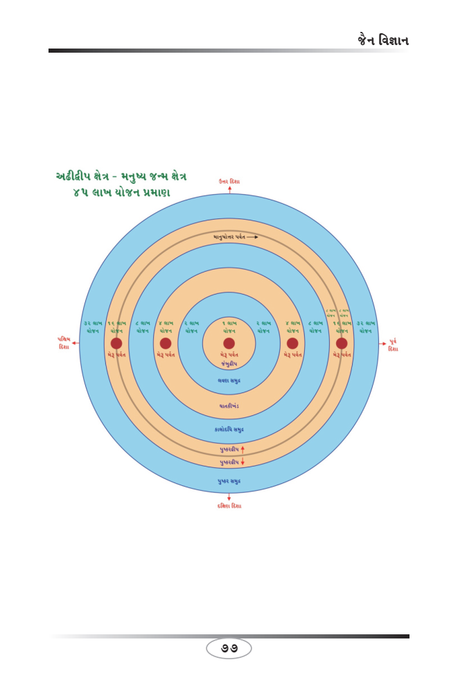

This book Unicode and EPUB Converted by Parth Shah (myself) free of charge as Gyaanseva. You can contact on caparthdshah@gmail.com for further details. You may quote reference "Jain Website"
યોગ - કાયાઃ
કાયા એટલે શરીર. શરીર એકેન્દ્રિય થી લઇ પંચેન્દ્રિય જીવોને હોય છે. મનુષ્ય
પંચેન્દ્રિય જીવ અને મન હોવાથી વિશિષ્ટ જીવ કહેવાય છે.
જેમ મન અને વચનથી હિંસા થાય છે પણ તે અવ્યકત હોય છે. પરંતું કાયાથી થયેલી હિંસા વ્યકત અને નરી આંખે દ્રશ્યમાન હોય છે. મિથ્યાજ્ઞાની લોકો માત્ર શરીરથી થયેલી હિંસાને જ હિંસા માને છે. મન અને વચનની હિંસાને હિંસા તરીકે ગણતાં જ નથી. તેના માનવા કે ન માનવાથી કર્મસત્તાના નિયમમાં કોઇ ફેરફાર થતો નથી. નિયમ શાશ્વત છે. દરેક જીવને સમાનતાથી લાગુ પડે છે.
કાયાથી જીવ હિંસાજનક કે શાતાજનક કાર્યો કરે છે. જેથી શુભ અને અશુભ કર્મો બંધાય છે. તેના પરિણામે ચાર ગતિ (નરક, તિર્યંચ, મનુષ્ય અને દેવ) પ્રાપ્ત થાય છે. ચાર ગતિમાં ભવ ભ્રમણા કરવી તેને સંસાર પરિભ્રમણ કહેવાય છે.
કાયાથી જીવ ચાલવું, દોડવું, બેસવું, સેવા, મદદ, ભોજન, મનોરંજન, નાટક, નૃત્ય, શાતાજનક કાર્યો, પીડા, વેદના, તકલીફો, હિંસા, મરણ, શરીરના અંગો કાપવા વગેરે દરેક દ્રશ્યમાન ક્રિયા શરીરથી થાય છે.
કાયાથી ક્રિયા હિંસાજનક હોય તો અશુભ કર્મો બંધાય. ઉદાહરણ સ્વરુપે એક મનુષ્યે બીજી વ્યકિત સાથે વેરની ભાવનામાં તેને મારી નાખવા શસ્ત્રો કે વગર શસ્ત્રો સાથે શરીરનો ઉપયોગ થતાં હિંસાજનક પ્રવૃતિ થાય છે તેમ સમજાય છે. કેમકે તે હિંસાજનક પ્રવૃત્તિઓમાં સામેલ થઇ ગયો છે. સમગ્ર જીવન દરમ્યાન આયુષ્યનો બંધ ન થયો હોય તો હિંસાજનક કાર્યો કરતા જો તે ક્ષણે જો મરણ થાય તો, તેને નરકગતિ પ્રાપ્ત થાય છે.
પ્રતિક્રમણમાં પ્રાયશ્ચિત સ્વરુપે કાયદંડ પરિહરું (એટલે કાયા દ્વારા થયેલી હિંસાને ત્યાગુ છું.) અને કાયગુપ્તિ આદરુ (એટલે કાયાને સંયમિત કરુ છું.) બોલાય છે.
39
Page 44
જૈનમ્ જયતિ શાસનમ્
અઢાર પાપ સ્થાનકઃ
જૈન દર્શનમાં હિંસા અને અહિંસાજનક ક્રિયાથી અશુભ અને શુભ કર્મ બંધાય છે. વિશેષતા એ છે કે સુખ સહુને ગમે છે પરંતું જીવ હિંસા કરીને ઉદયમાં આવનારા દુઃખો કોઇને ગમતા નથી. પ્રભુ શ્રી મહાવીરસ્વામી સમવસરણમાં ભારપૂર્વક જણાવ્યું હતું કે દરેક જીવને સુખ પ્રિય છે, દુઃખ અપ્રિય. જેમ તને સુખ પ્રિય છે તેમ દરેક જીવને પણ સુખ પ્રિય છે.
પ્રથમ આગમ આચારાંગ સૂત્રમાં પ્રથમ વિષય શસ્ત્રપરિજ્ઞાને પ્રથમ પ્રાથમિકતા આપી હિંસા સમજાવવાનો અથાગ પ્રયાસ કર્યો છે. જ્યાં સુધી જીવના પ્રકાર અને હિંસા ન સમજાય ત્યાં સુધી બધા જ વિષયોને સમજવા અર્થ વગરના છે. કોઇ વ્યકિત જીવ કેવા પ્રકારના છે અને જીવની હિંસા ક્યા શસ્ત્રોથી થાય છે, તે જો ન સમજાય તો જીવ પોતાના પતનના માર્ગે જશે.
હિંસા બે રીતે થાય છે, દ્રવ્યરુપે હિંસા અને ભાવરુપે હિંસા. દ્રવ્યરુપે હિંસા શરીરિક, પદાર્થો, સાધનો, ઉપકરણના સહયોગથી થાય છે. ભાવહિંસા મન અને વચનના સહયોગ અથવા કોઇ એકના ઉપયોગથી શક્ય બને છે.
અઢાર પાપ સ્થાનક તેમાં દ્રવ્ય હિંસા અને ભાવ હિંસાનો સંપૂર્ણ સમાવેશ થઇ જાય છે. પાપની ઉત્પત્તિના સ્થાનોમાં અઢાર મુખ્ય કારણોનો સમાવેશ થાય છે. પાપના પ્રાયશ્ચિત માટે સામાઇક અને પ્રતિક્રમણમાં પણ તેનો સમાવેશ છે.
અઢાર પાપસ્થાનક : 1) પ્રાણાતિપાત, 2) મૃષાવાદ, 3) અદત્તાદાન, 4) મૈથુન, 5)પરિગ્રહ, 6) ક્રોધ, 7) માન, 8) માયા, 9) લોભ, 10) રાગ, 11) દ્વેષ, 12) કલહ, 13) અભ્યાખ્યાન, 14) ચાડી, 15) રતિઅરતિ, 16) પરપરિવાદ, 17) માયામૃષાવાદ અને 18) મિથ્યાત્વશલ્ય.
40
Page 45
જૈન વિજ્ઞાન
પાપ સ્થાનક - પ્રાણાતિપાતઃ
જૈન દર્શન સુક્ષ્મ જીવ વિજ્ઞાન છે. દ્રવ્યથી થતી હિંસા તો હિંસા કહેવાય, પરંતું ભાવથી થયેલી હિંસા પણ, હિંસા જ કહેવાય! આટલું દિવ્યજ્ઞાન કેવળજ્ઞાની ભગવંતોને હોય છે. દરકે શુભ અને અશુભ કર્મો ઉદયમાં આવતા ભોગવવાના જ હોય છે.
પ્રાણાતિપાત, મુખ્ય 18 પાપસ્થાનકમાં પ્રથમ ક્રમાંકે આવે છે. પ્રાણ અ અતિપાત એટલે જીવોને પ્રાણ રહિત કરવો. દરેક જીવને સુખ પ્રિય છે, દુઃખ અપ્રિય છે. જીવોને પ્રાણ રહિત કરવાથી અધોગતિ (તિર્યંચ, નરક) પામે છે. પાપ કર્મથી જીવ ભારેકર્મી બને છે. એટલું જ નહીં જીવ સાથે વેર બંધાતા વેરાનુંબંધ પણ થવાથી જીવ સાથે દુશ્મની ઉદયમાં આવતા આ જ પ્રક્રિયાનું પુનરાવર્તન પણ જીવને થાય છે. દરેક કર્મ ચક્રવૃદ્ધિ વ્યાજની જેમ, એક પાપ અનંતગણું થઇ ભોગવવાનું હોય છે.
એક, બે, ત્રણ, ચાર અને પાંચ ઇન્દ્રિયના જીવોની હિંસા સંસાર પરિભ્રમણ કરાવી, મહા દુઃખો, લાંબા આયુષ્ય સાથે અનિચ્છાએ ભોગવવા પડે છે. આપણામાં લોક વાયકા છે, ‘હસતાં કર્મ ન બાંધીએ રોતા ન છૂટે’. યુ ટ્યુબમાં ‘દોડ નિગોદથી નિર્વાણ સુધી...’ ના વિડિયોમાં શસ્ત્રપરિજ્ઞા વિષયના વિડિયોમાં એકેન્દ્રિય થી પંચેન્દ્રિય જીવની હિંસાના કારણો આગમ સ્વરુપે તારક તીર્થંકર શ્રી મહાવીર સ્વામી ભગવાને જણાવ્યું છે તે જ અક્ષરસ ગાથા વિડિયોમાં જણાવેલ છે.
41
Page 46
જૈનમ્ જયતિ શાસનમ્
પાપ સ્થાનક - મૃષાવાદઃ
જૈન દર્શનમાં મુખ્ય અઢાર પાપસ્થાનકમાં બીજા ક્રમાંકે મૃષાવાદ આવે. મૃષા અ વાદ - મૃષા એટલે ખોટું અને વાદ એટલે વાતો/બોલવું. મૃષાવાદ એ ભાવ હિંસાનો પ્રકાર છે. તેમાં શારીરિક હિંસા નથી પરંતું આત્માના ગુણની હિંસા છે.
ખોટું બોલવા માટે ઘણાં કારણો હોઇ શકે. દરેક પ્રકારની હિંસક અને અનીતિ ક્રિયામાં મૃષાવાદનો સંભવિત સમાવેશ થાય છે. મૃષાવાદનો સહારો લઇ વધુ ને વધુ હિંસાજનક પ્રવૃત્તિઓ કરતો રહે છે. કોઇકના વિશ્વાસઘાત કરવામાં મૃષાવાદ મહત્વનો ભાગ ભજવે છે. મૃષાવાદનો સહારો લઇ અસત્ય બોલનાર વ્યકિત ભલે પોતાના ખરાબ કર્મો છૂપાવે પરંતું સામેની વ્યકિત સમક્ષ સત્ય અચૂક આવી જાય છે.
દરેક હિંસક અને અનીતિથી ધન કમાવનાર સદાય ખોટું બોલતા રહી એકેન્દ્રિય જીવથી પંચેન્દ્રિય જીવની હિંસા સાથે ભારે કર્મી બની ચારગતિમાં ભવભ્રમણા કરી સંસાર પરિભ્રમણ કરતો રહે છે. જેવું પોતે કર્યું છે તે મૃષાવાદ કાર્ય તેની સમક્ષ દુઃખદ રીતે ભોગવવા માટે આવે છે.
હિંસા નથી કરી, અનીતિ નથી કરી, ચોરી નથી કરી, ખોટું નથી બોલતો વગરે દરેક ઘાતક સંસારી વિષયો, ભૌતિક સુખો માટે મૃષાવાદનો સહારો લઇ રચ્યો પચ્યો રહે છે. ભવપરંપરા વધારી, આયુષ્ય વધારી, મહાદુઃખોને અનિચ્છાએ ભોગવતો રહે છે.
42
Page 47
જૈન વિજ્ઞાન
પાપ સ્થાનક - અદત્તાદાનઃ
જૈન દર્શનમાં અદત્તાદાન એટલે ચોરી. ચોરીને મુખ્ય 18 પાપસ્થાનકમાં ગણતરી થાય છે. કોઇની ઇચ્છા કે પરવાનગી મેળવ્યા વગર મેળવેલી વસ્તુ કે દ્રવ્ય ચોરી કહેવાય.
ચોરી માટે ઘણાં કારણો હોઇ શકે છે. કોઇની રજા વગર, કોઇની ઇચ્છા વગર (લૂંટ), કોઇના અજાણતાં મેળવેલી વસ્તુ, નધણિયાતી વસ્તુ, કરચોરી, ધાકધમકીથી મેળવેલી વસ્તુ, જબરદસ્તીથી છીનવેલી વસ્તુ વગરે ઘણાં કારણોનો સમાવેશ થાય છે.
જ્ઞાની ભગવંતો જણાવે છે કે, કોઇ વ્યકિતના અધિકારની દ્રવ્ય, વસ્તુ કે રુપિયા તેના સ્થાન કે તેના અધિકારના ક્ષેત્રમાં આવતા હોય તો તેનું દ્રવ્ય ગણાય. દેશ, રાજ્ય, નગર, ગ્રામમાં આવતા દ્રવ્ય તે સરકારનું ગણાય અને જે ક્ષેત્રમાં સરકારનો અધિકાર ન હોય તો તેનો અધિપતિ ઇન્દ્ર મહારાજ કહેવાય એટલે કે તેનો સંપૂર્ણ અધિકાર હોય. આવા કોઇ પણ દ્રવ્ય કે રકમ નધણિયાતું સમજીને મેળવી હોય તો તે ચોરી કહેવાય.
પાણી એ અદત્તાદાન (ચોરી) છે. ચોરી મહાપાપ છે. ચોરી સાથે પ્રાણાતિપાત (હિંસા), મૃષાવાદ, માયા, લોભના દોષોનો પણ સંભવતા થઇ શકે છે. પુણીયા શ્રાવકના સામાઇક પ્રભુ શ્રી મહાવીરસ્વામીના શ્રી મુખે વખણાયા. એક દિવસ તેમને સામાઇકમાં મન જ ન લાગ્યું. ઘણી જ બેચેની થઇ, ઘણાં જ વિચાર આવ્યા પણ અરતિ થવાનું કારણ જ ન સમજાયું. ધર્મપત્ની સાથે વાત કરી કહ્યું આજે મારુ સામાઇકમાં મન જ ન લાગ્યું જેથી હું બેચેન છું. ત્યારે ધર્મપત્નીએ ડરતાં ડરતાં ખૂલાશો કર્યો કે, સીમમાં જતાં ન ધણિયાતું ગાયનું છાણ લઇ આવી છું. તરત જ પુણિયા શ્રાવકને ભૂલ સમજાઇ અને ધર્મપત્નીને ગાયનું છાણ જ્યાંથી લાવી ત્યાં પાછું મુકી આવવા જણાવ્યું. આટલું સમ્યક્ અને પ્રભાવશાળી તેમના સામાઇક હતાં.
43
Page 48
જૈનમ્ જયતિ શાસનમ્
પાપ સ્થાનક - મૈથુનઃ
મૈથુન એટલે કામવાસના. કામવાસના બે પ્રકારની છે શારીરિક અને માનસિક. સ્ત્રી, પુરૂષ અને નપુસંકના શારીરિક સમાગમ હિંસાનું કારણ બને છે. મૈથુનથી શરીરના ગુપ્ત અંગોમાં રહેલા અસંખ્ય બે ઇન્દ્રિય જીવોની હિંસા થાય છે. એકજ સહવાસમાં લાખોની સંખ્યામાં સંમૂર્છિમ જીવોની હિંસા થઇ જાય છે.
મૈથુનના પ્રકારમાં પરસ્ત્રી, કુમારીકા, બાલિકા, વૃદ્ધાનો સમાવેશ થઇ જાય છે. પુરુષ માટે સ્ત્રીવેદ, સ્ત્રી માટે પુરુષવેદ અને નપુસંક માટે પુરુષવેદનો ઉદય થતાં કામેચ્છા પ્રબળ બને છે. વાસના પ્રબળ થતાં મનુષ્ય વિવેક ગુમાવી સારા નરસાનું ભાન ભૂલે છે.
પરસ્ત્રીગમનથી પુરુષ સાતમી નરકમાં જાય છે. સ્ત્રી છઠ્ઠી નરકમાં જાય છે. ત્યાં નપુસંક બની અગ્નિથી ધગધગતા લાલચોળ દંડ ઉપર સતત આલિંગન કરાવવામાં આવે છે. દીર્ધ આયુષ્ય નારકી બનીને ક્ષણિક આનંદ માટે મહાવેદનાને ભોગવવાની હોય છે.
મૈથુનથી બચવા ખાવાના તામસી દ્રવ્યો ડુંગળી, લસણ જેવા કંદમૂળો, તીખા આહાર, મિષ્ટાન, મહાવિગઇ વગરેનો ત્યાગ અને અંકુશ હોય છે. જ્ઞાની ભગવંતો મહાવિગઇના ત્યાગરુપ આયંબિલનું વિધાન બતાવ્યું છે. ઘણાં જ સૂચનો છે પરંતું આ લેખમાં સમાવેશ કરવો મુશ્કેલ છે. સ્ત્રીના અંગઉપાંગ જોવા નહીં. સ્ત્રી જે સ્થાનમાં બેસે તે સ્થાન ઉપર 48 મિનિટ પહેલાં કોઇપણ પુરુષ બેસે નહીં. આ જ પ્રમાણે સ્ત્રી માટે પુરુષને ગણવું. મૈથુનથી બચવા બ્રહ્મચર્ય વ્રતના પચ્ચકખાણ કે પાલન કરવાનું વિધાન છે.
44
Page 49
જૈન વિજ્ઞાન
પાપ સ્થાનક - પરિગ્રહ :
મુખ્ય અઢાર પાપ સ્થાનકમાં પરિગ્રહનો સમાવેશ થાય છે. પરિગ્રહ એટલે પરિ અ ગ્રહ (પરિ એટલે બધી દિશાથી (ચારેય દિશા) અને ગ્રહ એટલે ગ્રહણ કરવું, પ્રાપ્ત કરવું.). પરિગ્રહ એટલે જરુરીયાતથી વધુનો સંગ્રહ કરવો.
દરેક મનુષ્ય ધન, ધાન્ય, સેવકો, નોકર, ચાકર, પાળેલા પશુઓ (ઘોડા, હાથી, બળદ, ગાય, બકરી, ગધેડા, ઊંટ વગેરે), રત્ન, સોનુ, ચાંદી, ઝવેરાત, રોકડ ધનસંગ્રહ બધી દિશાથી દિવસ અને રાત જોયા વગર સતત કરતો રહે છે.
દરેક કાર્ય હિંસાજનક હોય છે. ભૌતિક સુખ પ્રાપ્તિ માટે સતત રચ્યો પચ્યો રહે છે. પરિવાર, સ્નેહીજનોના જીવન નિભાવ માટે તેમજ મિત્રજનો, ગ્રામજનો, જ્ઞાતિજનો માટે સહયોગ, દાન અને પ્રશંસા વગેરે કાર્યો માટે ધનનો પરિગ્રહ કરે છે.
પરિગ્રહ માટે એકેન્દ્રિય થી પાંચ ઇન્દ્રિય જીવોના શોષણ અને હિંસા કરવામાં સંકોચ અનુભવતો નથી. વિવેક વગરનો તે મનુષ્ય પરિગ્રહ વધારતાં સતત અસંતોષ અને ધનને લુંટ, ચોરી અને સરકારી અધિકારીઓ દ્વારા જપ્ત થવાના ભયથી પણ સતત દુઃખી રહે છે. ધન સંગ્રહથી ભોગવિલાસમાં ભાન ભૂલી પાપ કર્મો વધારતો પોતાનું પતન નોંતરે છે. જીવ હિંસા કરતાં એકેન્દ્રિય થી પંચેન્દ્રિય જીવ સાથે વેર વધારતો સંસારનું પરિભ્રમણ વધારી મહા દુઃખદાયી ગતિઓમાં જીવન મરણ કરતો રહે છે.
45
Page 50
જૈનમ્ જયતિ શાસનમ્
પાપ સ્થાનક - ક્રોધ :
કષાયમાં ક્રોધ, માન, માયા અને લોભનો સમાવેશ છે. રાગ અને દ્વેષમાં ક્રોધનો દ્વેષમાં સમાવેશ હોય છે. ક્રોધ મનુષ્યનો સૌથી મોટો દુર્ગુણ કહેવાય. મનુષ્યમાં બધાજ સારા ગુણ હોય પરંતું એક ક્રોધ અવગુણ હોય તો બધા જ સારા ગુણોનો કોઇ અર્થ નથી.
ક્રોધ નરકનું સ્વરુપ કહેવાય. ક્રોધ અગ્નિનું સ્વરુપ કહેવાય. ક્રોધ દાવાનળ પણ કહેવાય જેના સંપર્કમાં જે કોઇ આવે તે પણ ભષ્મ થઇ જાય. ક્રોધના કારણે મનુષ્યને વિવેક અને સારાનરસાનું ભાન રહેતું નથી.
પ્રબળ ક્રોધ અવસ્થામાં જો મનુષ્યને આયુષ્ય બંધ ન થયો હોય તો તેને તિર્યંચગતિ કે નરકગતિ પણ થઇ શકે છે તે તેના ક્રોધના કારણ ઉપર નિર્ભર રહે છે. ક્રોધ લાંબો સમય નથી રહેતો પરંતું મનુષ્યનું પતન કરવામાં નિમિત્ત અચૂક બને છે.
ચંડકૌશિક એ કૌશિક તાપસ (સાધુ જે વનમાં રહી કંદમૂળ અને વનમાં ઉપલબ્ધ સચિત્ત ફળો ખાઇ ને જે તપસ્યા કરતાં હોય તેવા સાધુને તાપસ કહેવાય) હતા. એક દિવસ ગામના નટખટ છોકરાઓ તેના આશ્રમમાં આવ્યા. આશ્રમમાં ઉગેલા ફળ-ફૂલોને તોડતાં કૌશિક મુનિથી સહન ન થયું. ક્રોધિત થઇ તે દંડ હાથમાં લઇને છોકરાઓને મારવા દોડ્યા. દોડતાં દોડતાં આશ્રમનો થાંભલો તેને માથામાં વાગતાં જ મરણ થયું અને તે જ ક્ષણે નાગની યોનીમાં જન્મ થયો. દ્રષ્ટિવિષ પ્રચંડ નાગ બન્યો. ક્રોધથી તપેલી તેને આંખો મળી, તે જેના ઉપર દ્રષ્ટિ કરે તે ભષ્મ થઇ જાય. આ કારણે આજુબાજુના પરિસરો પણ ખાલી થઇ નિર્જન થયા.
ક્રોધ વખતે તેણે માત્ર બાળકોને દંડાથી ડર અને મારવાના ભાવ હતાં જેથી તિર્યંચગતિ પ્રાપ્ત થઇ પરંતું જો તેને, બાળકોને જીવ રહિત કરવાના ભાવ હોત તો અચૂક નરકગતિ થઇ હોત. ક્રોધની ઉત્પત્તિનું મુખ્ય કારણ પોતાની ઇચ્છા પ્રમાણે તેમ ન થવું હોય છે. ક્રોધને શાંત કરવા માટે ક્ષમા, નવકાર મંત્રનું સ્મરણ અથવા ક્ષેત્ર થોડા સમય પુરતું છોડી દેવું. ક્રોધ દૂધના ઊભરા જેવું હોય છે.
46
Page 51
જૈન વિજ્ઞાન
પાપ સ્થાનક - માનઃ
માન, સ્વમાન (સ્વાભિમાન), અભિમાન દરેકમાં વિશેષ ફરક છે. દરેક માનના પ્રકાર છે. માનના કારણે ક્રોધ સંભવે છે. માનમાં શાન, પ્રતિષ્ઠા ગર્ભિત છૂપાયેલા છે. એકંદરે અભિમાન વાચક સમાન કહી શકાય. આદર એ વિવેક સ્વરુપે કહી શકાય પરંતું માન સાથે સરખાવવું ઉચિત નથી.
દાન, માન - પ્રતિષ્ઠાના કારણે વેડફાઇ જાય છે. દાન આપનારનું માન ન સચવાય તો તેમને ક્રોધ શરળતાથી ઉદ્ભવે છે. તારક તીર્થંકર પરમાત્મા શ્રી મહાવીરસ્વામી સાડા બાર વર્ષ વન, ઉપવન અને ગામોમાં વિચરણ કર્યું. અનાર્યો દ્વારા તેમની ઘોર ઉપેક્ષા થઇ. ગોશાળાના તોફાન થકી ભગવાનને ઘણું જ વેઠવું પડ્યું. અનંત ચક્રવર્તીઓ કરતો અનંત ઘણી શકિત પ્રભુ પાસે હતી. પરંતું ક્યારેય તેમને આ શકિતનું માન ન હતું, કે ન તેમણે ઉપયોગ કર્યો. 64 ઇન્દ્રો તેમની સેવામાં તત્પર હતાં તેમનું પણ માન ન હતું. ભરી સભામાં ગોશાળાએ પ્રભુ મહાવીર સ્વામીનું અપમાન કર્યું. પ્રભુએ તો માન ઉપર વિજય મેળવ્યો હતો.
આવા માન-સન્માનને ત્યજી પ્રભુએ સુંદર અભ્યાસ આપ્યો. આપણને માન દરેક ક્ષણે જોઇએ છે એના કારણો ઘણા હોઇ શકે. જો માન ન મળે તો આપણું આપમાન થયું છે તેમ ગણી લઇએ છે એટલા તો આપણે સર્વોપરી માનીએ છીએ. માન વ્યકિતત્વ અને માનવતાનું પતન કરે છે.
આજકાલ દાન મેળવવા માટે પ્રલોભનો સ્વરુપે, સામાન્ય અને શ્રેષ્ઠિવર્યોની શ્રેણી જાળવવા સ્વરુપે સભામાં બેઠકોની વ્યવસ્થા એ જ પ્રમાણે ગોઠવાય છે. આગળની હરોળમાં બેસનારને આ પ્રમાણેનું માન અપાય છે. માનના કારણે અભિમાન તરત પ્રવેશે છે સાથે ક્રોધ વણ નોતર્યો મહેમાન બની આવે છે.
47
Page 52
જૈનમ્ જયતિ શાસનમ્
પાપ સ્થાનક - માયાઃ
માયાનું કષાયમાં સમાવેશ થાય છે. માયા સામાન્ય વિચારે જોઇએ તો આર્ય સંસ્કૃતિમાં કહેવાય કે મને ભગવાનની માયા લાગી છે. માયા અર્થ ઘટન અહીં ઉચિત નથી. માયા એટલે કપટ, છલ, દંભના અર્થે થાય છે.
માયા માટે રામાયણમાં રાક્ષસોને માયાવી સ્વરુપ લઇને ઋષિઓના આશ્રમે આંતક મચાવ્યાની વાત આવે છે. જૈન દર્શનમાં 19માં તીર્થંકર પરમાત્મા શ્રી મલ્લીનાથ ભગવાનના પૂર્વ જન્મની વાત આવે છે. છ મિત્રો સામૂહિક દીક્ષા લઇ ઉત્કૃષ્ટ તપ આદર્યું. ધારેલ તપનું પૂર્ણાહુતિએ પારણું કરવાનું સામૂહિક નિર્ણય લેવાયો.
અહીં છ મિત્રોમાં પોતે વધુ એક ઉપવાસ આદરી મિત્રોમાં સર્વોચ્ચ તપ કરવાના અભિયાને માયાનું સ્વરુપ પ્રકાશ્યું. મિત્રોએ જ્યારે પુછ્યું કે આપે પારણું કર્યું ત્યારે પ્રત્યુત્તરમાં કહ્યું કે હા! આ રીતે ઉગ્ર તપસ્યા કરી હોવા છતાંય માયા કર્મનો બંધ થયો.
અનંત ચોવીસીઓમાં પ્રથમવાર એવી આશ્ચર્યજનક ઘટના બની કે તીર્થંકર પરમાત્મા સ્વરુપે સ્ત્રી તીર્થંકર તરીકે શ્રી મલ્લીનાથ ભગવાન થયા. આ તેમણે પૂર્વે આદરેલ તપમાં માયાના ભાવ હતાં.
દ્રવ્ય, ક્ષેત્ર, કાળ, સંજોગના પ્રભાવે માયા કર્મના ઉદયે તિર્યંચ, મનુષ્ય કે દેવ ગતિમાં ઘણખરું સંભવતઃ સ્ત્રી તરીકે જન્મ ધારણ કરવું પડે છે. નરકમાં નપુસંક પણે જન્મ થાય છે.
માયામાં છલ, કપટ, પ્રપંચ, દંભ, કાવાદાવા, રાજકારણ વગરે પ્રકારના
કાર્યોનો સમાવેશ થઇ જાય છે.
48
Page 53
જૈન વિજ્ઞાન
પાપ સ્થાનક - લોભઃ
જૈન દર્શનમાં લોભને અઢાર મુખ્ય પાપ સ્થાનકમાં સમાવેશ થયો છે. લોભ પાપનું મૂળ છે. લોભથી ધન સંગ્રહ અને દ્રવ્ય સંગ્રહ વધે છે. અંશતઃ પરિગ્રહનું સિંચન થાય છે. લોભ એટલે ધન કે દ્રવ્યમાં રહેલી આશકિત. લોભમાં સંપૂર્ણ કંજૂસાઇ સમાઇ શકે, કરકસર નહીં. લોભ કરવાના ઘણાં જ કારણો હોઇ શકે. લોભના કારણે વ્યકિત ભોગ ભોગવી શકતો નથી. દાન કરી શકતો નથી.
લોભના કારણે દ્રવ્ય ખર્ચાઇ જતાં જીવબળતરા થતાં ભાવ પરિણામ ખરાબ આવે. હંમેશા ધનની વૃદ્ધિ વધે તેમાં જ વધુ રસ રહે. ધન વૃદ્ધિમાં એક ઇન્દ્રિય થી પાંચ ઇન્દ્રિયના જીવોની હિંસાનો સમાવેશ થઇ જાય છે. મમ્મણ શેઠ લોભના કારણે સાતમી નરકે ગયા. મમ્મણ શેઠ અઢળક ધનના સ્વામિ હતા. શ્રેણિક રાજાનું ધન પણ ઝાંખુ લાગતું. મમ્મણ શેઠ એકઠાં થયેલા ધનમાંથી અમૂલ્ય રત્નોના બળદ બનાવ્યા. સંપૂર્ણપણે રત્નોનો એક બળદ બનાવ્યો અને બીજા બળદનું માત્ર એક શીંગડું જ અમૂલ્ય રત્નથી બનાવવાનું બાકી રહ્યું હતું.
લોભના કારણે નિયમિત ભોજનમાં માત્ર ચોળા અને તેલનો જ ઉપયોગ લેતાં. દાન દેવાની તો ક્યારેય વૃત્તિ જ ન હતી. ધનનો સંગ્રહ વધારવા ફાટેલા વસ્ત્રો પહેરતાં. ધન એકઠું કરવા જંગલમાં લાકડાં વીણવા જતા અને તેને વેંચીને પણ ધન એકઠું કરતાં. એક દિવસ શ્રેણિક રાજાની મહેલના ઝરુખેથી નજર મમ્મણ શેઠ ઉપર પડે છે. ધોધમાર વરસાદમાં એક વ્યકિત ફાટેલા વસ્ત્રોમાં લાકડાં ભેગા કરી રહ્યો છે. શ્રેણિક રાજાને અફસોસ થયો મારી પ્રજા આટલી ગરીબ અને કઠણાઇમાં જીવન જીવે છે!
શ્રેણિક રાજા તે વ્યકિતના ઘરે જાય છે તેને સહાયતાના ભાવ સાથે પૂછે છે આપને શું જોઇએ છે તે હું આપને આપું, તેથી આપનું દુઃખ ઓછું થઇ શકે. આશ્ચર્યની ઘટના ત્યારે થાય છે કે આટલા અમૂલ્ય રત્નના બળદ! માત્ર એક શિંગડા માટેની જરૂરત માટે આવી કસરત!
49
Page 54
જૈનમ્ જયતિ શાસનમ્
પાપ સ્થાનક - રાગઃ
રાગ એટલે આશકિત. એક વ્યકિતના બીજી વ્યકિત સાથે લાગણીના સંબંધો. રાગ એટલે સંગીતના રાગનું કથન અહીં નથી. રાગ સારી વ્યવહારિક ક્રિયા હોવા છતાં પણ પાપ સ્થાનકમાં તેની ગણતરી આવે છે. રાગના કારણે મનુષ્ય હિંસાજનક ક્રિયા કરી લે છે. પોતાના પરિવારજનો, સ્નેહીજનો, મિત્રો, સમાજ, ગુરુ કે દેશ સાથે રાગ થઇ શકે છે. રાગના કારણે મનુષ્યને મોહ ઉત્પન્ન થાય છે. રાગના કારણે ન કરવા યોગ્ય કાર્ય કરી લે છે.
પોતાના ગુરુ ચરમતીર્થાધીપતિ શ્રી મહાવીરસ્વામી પ્રત્યે શ્રી ઇન્દ્રભૂતિ ગૌતમસ્વામીને અતૂટ રાગ હતો. ચાર જ્ઞાનના સ્વામિ હોવા છતાં પણ દરેક શંકાનું સમાધાન માટે શ્રી મહાવીરસ્વામી ભગવાનને જ પૂછતાં, એટલો ગાઢ સ્નેહ પ્રભુ પ્રત્યે હતો. શ્રી ગૌતમસ્વામીને અંતેવાસી શિષ્ય કહેવાય છે. અંતેવાસી એટલે સદાય પ્રભુની બાજુમાં રહ્યા હતાં. ક્યારેય ભગવાનથી અલગ થયા નહોતા. એમને સતત શંકા રહેતી કે મારા દરેક શિષ્યોને કેવળજ્ઞાન પ્રગટ થયું તો મને કેમ નથી ઉપજતું? પ્રભુએ કહ્યું તને મારા પ્રત્યે અગાઢ રાગ છે. પ્રભુ પ્રત્યેનો અગાઢ રાગ તોડવો શ્રી ગૌતમસ્વામી માટે અશક્ય હતો.
પ્રભુ, પોતાના નિર્વાણનો સમય આવ્યો છે તે જાણી, શ્રી ગૌતમસ્વામીનો અગાઢ રાગ તોડવા માટે દેવશર્માને પ્રતિબોધ કરવા મોકલાવે છે. સમવસરણમાં 48 કલાક સતત દેશના આપી દેવ, મનુષ્ય અને તિર્યંચ જીવને બોધ આપ્યો. જે સંવાદ ઉત્તરાધ્યયન સૂત્ર (ઉપાંગ)માં અક્ષરસ લખાયેલ છે. દેવશર્મા પ્રતિબોધિ પરત પાવાપુરી તરફ પ્રયાણ કરે છે. રસ્તામાં સમાચાર મળે છે કે પ્રભુજી નિર્વાણ (હવે પછી જન્મ-મરણ ન થાય તેવા મરણને નિર્વાણ કહેવાય) પામ્યા. ઘેરો આઘાત લાગે છે, પ્રભુ! આપે મને આપથી કેમ અળગા કર્યા? ઘણાં જ મનોમંથન પછી ખ્યાલ આવે છે હું મિથ્યા રાગ કરું છું! તરત જ કેવળજ્ઞાન પ્રગટ થાય છે. જિનેશ્વર દેવ દીક્ષા લીધા પછી છદ્મસ્થ અવસ્થામાં રાગ-દ્વેષનો ક્ષય કરી વીતરાગી બને છે.
50
Page 55
જૈન વિજ્ઞાન
પાપ સ્થાનક - દ્વેષ :
દ્વેષ એટલે વેર. વેરના કારણો ઘણાં હોઇ શકે. પૂર્વે આદરેલા કર્મોથી થયેલા જીવો સાથે આપસી વેરની ભાવના. વર્તમાન જીવનમાં નૂતન કર્મોથી પણ વેરની ભાવના નિર્માણ થાય છે.
વેરને શાંત કરવાનો એકમાત્ર ઇલાજ છે ક્ષમા. વેરના કારણે જીવને પીડા, વેદના, નુકસાન, અંગ છેદ (અપંગ), માનસિક અને શારીરિક તકલીફો, હિંસા કરવાના ભાવો પ્રતિક્ષણ આવે છે. જ્યાં સુધી સામે વાળા જીવને પૂરી રીતે તકલીફ કે પ્રાણ રહિત ન કરે ત્યાં સુધી ચેન નથી પડતું. આ પરંપરા જીવ-પ્રતિ જીવ સાથે ભવપરંપરાએ થતી જ રહે છે. શાસ્ત્રમાં ઉદાહરણ આપ જોઇ શકશો કમઠ અને શ્રી પાર્શ્વનાથ ભગવાન તેમજ દ્વારપાલ અને શ્રી મહાવીરસ્વામી.
વર્તમાન અવસર્પિણી કાળમાં પ્રથમ વાસુદેવ તરીકે નયસાર સાર્થવાહનો જીવ ત્રિપુષ્ઠ વાસુદેવ થયા. વાસુદેવ ત્રણ ખંડના રાજા હોય છે. ચક્રવર્તી છ ખંડના રાજા હોય છે. એક દિવસ વાસુદેવે દ્વારપાલને આદેશ આપ્યો કે નાટ્ય-મનોરંજન-ગીત, મને નિદ્રા (ઉંઘ) આવી જાય તો તરત જ બંધ કરાવી દેવું. જ્યારે ત્રિપુષ્ઠ વાસુદેવ સવારે ઉઠે છે ત્યારે જુએ છે મનોરંજન હજુ ચાલે છે. વાસુદેવનો ક્રોધ વધ્યો, આદેશનું ઉલ્લંઘન! તરત સેવકોને બોલાવી સીસું ગરમ કરાવ્યું. વાસુદેવે ગરમ, ધખધખતું પીગળેલું સીસું દ્વારપાલના કાને રેડ્યું, પરિણામે દ્વારપાલનું મૃત્યુ થયું પણ મરતાં મરતાં દ્વારપાલનું વેર પ્રબળ હતું.
આજ કર્મનો ઉદય 27માં ભવે શ્રી મહાવીરસ્વામીના સમયે આવે છે. દ્વારપાલનો જીવ ખેડૂત બન્યો છે. પોતાના બળદોનું ધ્યાન રાખવાનું જણાવી પોતે બહાર જાય છે. પરત આવતા બળદો ન મળતા વેરની ભાવનાથી કાનમાં શૂળ ભોંકે છે. શૂળને કોઇને નજરમાં ન આવે તે રીતે બન્ને બાજુથી શૂળનો બહારનો ભાગ કાપી નાખે છે જેથી કોઇ જોઇ ન શકે અને કાઢી પણ ન શકે. પ્રભુને કાનમાં કારમી વેદના હતી. પરંતું ખેડૂતને આ ખરાબ કાર્ય માટે ક્ષમા જ આપે છે.
51
Page 56
જૈનમ્ જયતિ શાસનમ્
પાપ સ્થાનક - કલહઃ
કલહ એટલે કજીયો, ઝગડો, વિવાદ. કલહ મુખ્ય પાપ સ્થાનકમાં સમાવેશ થયો છે. કલહનું મુખ્ય કારણો પોતાની ઇચ્છિત વસ્તુની અપૂર્તિ, ક્રોધ આંતરિક હોય તો કલહ જીભે હોય, અભદ્રભાષાનો ઊપયોગ, વાણીમાં અસંયમ, કોઇની વસ્તુને અનીતિથી લઇ લેવી, ઇર્ષ્યા, લોભ, મૈથુન, માન, માયા વગેરે અનેક કારણોથી કલહ ઉત્પન્ન થાય છે.
ક્રોધથી વાણીમાં સંયમ રહેતો નથી. ઉગ્ર સ્વભાવી થાય છે. જ્યારે કલહથી માનવ વિવેક વગરનો જણાય છે. ઝગડાખોર મનુષ્યથી પરિચયમાં આવનાર લોકો, સ્નેહીજનો, મિત્રજનો, જ્ઞાતિજનો વગેરે દુર થાય છે.
કલહના કારણે આત્મહિત થતું નથી, શારીરિક અને ભાવ હિંસા ઉદ્ભવે છે. કલહ અને ક્રોધના સમન્વયથી એકેન્દ્રિય થી પંચેન્દ્રિય જીવોના હિંસાની સંભવના વધે છે. કલહના કારણે આપસી વેરભાવ વધે છે. વેરનો બદલો લેવા માટે જીવ પુનઃ પુનઃ પ્રયાસ કરતો રહે છે. કલહ વખતે સમતાપૂર્વક વાણી સહન કરવી. પ્રત્યુત્તરના કારણે કલહ દાવાનળ સ્વરુપ લે છે. મૌન સરળ ઇલાજ છે કલહ ઉપર વિજય મેળવવા માટે!
52
Page 57
જૈન વિજ્ઞાન
પાપ સ્થાનક - અભ્યાખ્યાનઃ
જૈન દર્શનમાં અભ્યાખ્યાન એટલે આળ, આરોપ, તહોમત થાય છે. અભિ +
આખ્યાન = અભ્યાખ્યાન. અભિ એટલે સામે અને આખ્યાન એટલે કહેણ.
આપણને સરળતાથી આરોપ શબ્દ સમજાઇ શકે છે. દા. ત. કોઇ વ્યકિત એ ચોરી કરી છે કે નહીં તેની માત્ર શંકાથી આપણે તેને ચોર કહીએ છીએ. વસ્તુની ચોરી આપણે ભલે પ્રત્યક્ષ ન જોઇ હોય તો પણ સામે વાળો ચોર છે આવો ગંભીર આક્ષેપ કેમ સંભવ બને?
નિર્દોષ વ્યકિત ઉપર માત્ર આપણી બુદ્ધિ ક્ષમતાથી કોઇપણ બાબતનો આરોપ શંકા માત્રથી ઘડી નાખીએ છીએ તેમજ તે વ્યકિતને તે પ્રમાણે જ શંકાની નજરે જોતા હોઇએ છે. આ પ્રકારનું પાપ તે અભ્યાખ્યાન કહેવાય. આવા આરોપોની નોંધ કર્મસત્તા લે છે.
નિર્દોષ વ્યકિત ઉપર આરોપના પરિણામ સ્વરૂપે અભ્યાખ્યાન કર્મ અનંતગણો થઇ આરોપ દેનાર સાથે કર્મ ઉદયમાં આવતાં તેને ભોગવવા જ પડે છે. આટલું માત્ર આરોપ ઘડનાર જ નહીં! પરંતું આરોપના પ્રચાર, સહયોગ, સમીક્ષા કે અનુમોદના કરનારને પણ આટલું જ લાગુ પડે છે. અભ્યાખ્યાન માટે વિષય ઘણાં હોઇ શકે દા. ત. ચોરી તેમજ સંસારમાં રહેલી વિવિધ પ્રવૃત્તિઓ.
53
Page 58
જૈનમ્ જયતિ શાસનમ્
પાપ સ્થાનક - ચાડીઃ
ચાડી એટલે ચુગલી, કોઇની વિરુદ્ધ અન્યને જઇને ફરિયાદ કરવી તે. જૈન દર્શનમાં ચાડી, મુખ્ય 18 પાપસ્થાનકમાં સમાવેશ થયો છે. ઘણીવાર એવું બને કોઇના ભેદ બીજાને કહી દઇએ તે પણ ચાડીનો પ્રકાર છે. ઇર્ષ્યાના કારણે સામે વાળાનું સારું ન જોઇ શકવાથી કોઇક ત્રૂટી કે ખામી તરીકેનું જાહેર કરવાનું કારણ પણ ચાડી તરીકે હોઇ શકે છે.
અંગ્રેજો ભારતમાં પ્રવેશ્યા અને કૂટનીતિ પ્રમાણે રાજાઓને મહામૂલ્ય ભેટ ધરતાં. રાજા પ્રસન્ન થઇ વેપાર કરવાની આઝાદી આપતાં અને આશરો પણ! ધીમે ધીમે રાજાના ભેદ જાણી, બીજા રાજા દ્વારા યુદ્ધ કરાવતાં અને પોતાનો પ્રભાવ વિસ્તારતાં. તેમની આ કૂટનીતિ ચાલમાં લોભ, માયા અને ચાડીનો મુખ્યત્વે સમાવેશ રહેતો.
સંસારમાં ઘરેલું કારણોમાં દેરાણી, જેઠાણી, નણંદ, સાસુ, દિયર, જેઠ, મિત્ર, સ્નેહીજનો વગેરે સાંસારિક સંબંધોમાં તિરાડો જો પડ્યા હોય તો તેમાં મુખ્ય કારણોમાં ચાડીનો સમાવેશ હોય છે.
ચાડીથી ક્યારેય કોઇનું હિત થતું નથી. આત્મ ગુણોનો ઘાત થાય છે. જ્યારે સામેની વ્યકિતને ચાડીનો આભાસ થાય છે ત્યારે પરસ્પર વેર વધે છે. હિંસા કરવાના ભાવ આવે છે.
54
Page 59
જૈન વિજ્ઞાન
પાપ સ્થાનક - રતિઅરતિઃ
રતિઅરતિ એટલે રુચિ અને અરુચિ. રતિઅરતિ બન્ને વિષયો એક બીજાથી અલગ છે. કરવા યોગ્ય કાર્યમાં અરુચિ થવી અને ન કરવા યોગ્ય કાર્યમાં રુચિ થવી તે સંદર્ભે ઉલ્લેખ થાય છે.
તારક તીર્થંકરની વાણીમાં શ્રદ્ધા રાખી તેમણે કહેલા જિનાજ્ઞા માર્ગે ચાલવામાં રુચિ કરવી જોઇએ, પરંતું મનુષ્ય તેનાથી વિપરીત સાંસારિક, ભૌતિક સુખો મેળવવા સતત રુચિ કરે છે. સાંસારિક ભૌતિક સુખ એકેન્દ્રિય થી પંચેન્દ્રિય જીવોની હિંસા વગર શક્ય જ નથી.
તે જ પ્રમાણે અરુચિ કરવા યોગ્ય કાર્યમાં રુચિ કરે છે. સમ્યગ્જ્ઞાન, સમ્યગ્દર્શન અને સમ્યગચારિત્રમાં રુચિ કરવાનું છે. આત્માનું ત્રૈકાલિક ગુણ અવસ્થા રત્નત્રય (જ્ઞાન, દર્શન અને ચારિત્ર) છે. આત્માનું અસલી સ્વરુપ છે. હિંસાજનક કાર્યોના પરિણામે મિથ્યાજ્ઞાન, મિથ્યાદર્શન અને મિથ્યાચારિત્રથી પ્રોત્સાહિત થઇ આત્મા ઉપર આઠ મુખ્ય આવરણો ચડાવતો રહે છે. જીવને સત્ય સમજાતું નથી, આત્માના મુખ્ય આઠ ગુણોથી વિપરિત કર્મોના આવરણ થકી, મોહનીય કર્મવશના કારણે મનુષ્ય સંસારમાંથી છૂટી શકતો નથી. રતિ યુકત કાર્યોમાં અરતિ અને અરતિ યુકત કાર્યોમાં રતિ કરી બેસે છે. મનુષ્યને મોહમાં બાંધી નાખે છે.
55
Page 60
જૈનમ્ જયતિ શાસનમ્
પાપ સ્થાનક - પરપરિવાદઃ
પરપરિવાદ એટલે નિંદા. બીજાની નિંદા કરવી, કુથલી કરવી, ગુણીજનો કે નિર્ગુણીજનોની નિંદા કરવી. લોકોની નિંદા કરવી તે આત્મ કલ્યાણકારી નથી. બીજાના અવગુણોની નિંદા કરવી તેમજ બીજાના રહેલા સદગુણો ઇર્ષ્યાના કારણે માત્ર તેના અવગુણો જ પ્રકાશવા તેમાં મુખ્યત્વે નિંદા કામ કરી જાય છે.
દરેક વ્યકિત પોતપોતાની રીતે સારું આપવાનું કે સારા બનવા માટે પ્રયત્નશીલ હોય છે. પ્રયાસો છતાં પણ ક્યાંક ક્ષતિ રહી શકે, એનો અર્થ એમ ન થાય કે તેણે પ્રયાસો નથી કર્યો. મનુષ્યમાં લોકોના દુર્ગુણ જોવાની આદત હોય છે. પોતાનાથી કોઇ ઉંચે ન ચડી જાય તે માટે પણ પ્રયત્નશીલ બને છે. બીજાની નિંદા કરવા જતાં પોતે જ નિંદાનો શિકાર બની જાય છે.
ભરી સભામાં જ્યારે ગોશાલાનું કર્તૃત્વ પ્રભુ મહાવીરે જાહેર કર્યું ત્યારે ગોશાલો ધૂંઆફૂંઆ થતાં પ્રભુ દ્રારા આચરવામાં આવતા ધર્મની નિંદા કરવા લાગ્યો. પોતે પણ 25મો તીર્થંકર છે એમ લોકોને કહેવા લાગ્યો. સતત પ્રભુની નિંદા કરવા લાગ્યો. જૈન દર્શનમાં નિંદાને 18 મુખ્ય પાપસ્થાનકમાં સમાવેશ થયો છે. નિંદાના કારણે વેર પ્રતિવેર, હિંસા પ્રતિહિંસાની સંભવના વધે છે.
56
Page 61
જૈન વિજ્ઞાન
પાપ સ્થાનક - માયા મૃષાવાદઃ
જૈન દર્શનમાં માયામૃષાવાદ એટલે ખોટું બોલવું, અસત્ય બોલવું. વાસ્તવિક પરિસ્થિતિ ન જણાવવી, વસ્તુતઃ દર્શન ન જણાવવા, જે પરિણામ છે તેનાથી વિપરીત પરિણામ બતાવવું. જે ક્રિયા કે કાર્ય કર્યું છે તે નથી કર્યું તેમ જણાવવું, અસત્ય વાતને સત્ય કહેવી અને સત્ય વાતને અસત્ય કહેવી વગેરે ઘણાં જ કારણો માયા મૃષાવાદમાં ગણાય.
એવું કહેવાય કે કર્મની સત્તામાં દરેક ઇન્દ્રિય દ્વારા કાર્ય કરવાની સ્વતંત્રતા મળી જેથી તેનો સદુપયોગ થવો જોઇએ, પરંતું તેનો દુરુપયોગ થવાથી તે ઇન્દ્રિય દૂર્લભ થાય છે એટલે કે બીજા ભવમાં ઇન્દ્રિય પરિપૂર્ણ થવી મુશ્કેલ હોય છે અથવા ખોડખાંપણ આવે છે.
આંખ, કાન, નાક, જીભ અને સ્પર્શ (ચામડી) દ્વારા થતી વિવિધ ક્રિયા (શુભ અને અશુભ) જેવા કાર્ય તેવા પરિણામ! વાસ્તવમાં અસત્ય બોલવાથી વ્યકિત માત્ર પોતાને જ મૂર્ખ બનાવી શકાય છે. અસત્યને છૂપાવવા વધુને વધુ ખોટું બોલતાં રહેવું પડે છે, એટલું જ નહીં સતત સાવધાન રહેવું પડે છે ક્યાંક તેનું અસત્ય પકડાઇ ન જાય! સામે વાળી વ્યકિત તો તમારા ઉપર અતૂટ શ્રદ્ધા હોવાથી સહજપણે માની લે છે. જ્યારે વાસ્તવિક હકીકત સમજાય છે ત્યારે ખોટું બોલનારને ઘણું જ ગુમાવવું પડે છે.
57
Page 62
જૈનમ્ જયતિ શાસનમ્
પાપ સ્થાનક - મિથ્યાત્વશલ્યઃ
જૈન દર્શનમાં 18 મુખ્ય પાપ સ્થાનકમાં મિથ્યાત્વશલ્ય એટલે મિથ્યાત્વ એટલે
ખોટું, અસત્ય, અજ્ઞાન વગેરે અને શલ્ય એટલે કાંટો, અસત્યરુપી કાંટો.
જે સત્ય છે તેને તે સ્વરુપે ન સ્વીકારવું તે મિથ્યાત્વ કહેવાય. જે વાસ્તવિક સ્વરુપ છે તેને નકારવું તેને મિથ્યાત્વ કહેવાય. સમ્યકજ્ઞાન, સમ્યગ્દર્શન અને સમ્યકચારિત્રની વિપરીત જે જ્ઞાન, દર્શન અને ચારિત્ર છે તે મિથ્યાજ્ઞાન, મિથ્યાદર્શન અને મિથ્યાચારિત્ર.
તારક તીર્થંકર શ્રી મહાવીર સ્વામી જન્મથી શ્રુતજ્ઞાની, મતિજ્ઞાની અને અવધિજ્ઞાની હતાં તેમજ દીક્ષા લેતાં જ મનઃપર્યવજ્ઞાન પ્રગટ થયું તો પણ સાડા બાર વર્ષ મૌન રહ્યા એટલે કે આટલું બધું દિવ્યજ્ઞાન હોવા છતાંય પ્રવચન કે દેશના ન આપી. લક્ષ્ય હતું જ્યાં સુધી સંપૂર્ણ જ્ઞાન પ્રગટ ન થાય ત્યાં સુધી મૌન રહેવું.
જ્યારે કેવળજ્ઞાન પ્રગટ થયું ત્યારે જ પ્રથમ દેશના (પ્રવચન) આપ્યું. એટલું તેમનું જ્ઞાન અણિશુદ્ધ હોય છે. તેમની વાણીમાં ઉચ્ચારમાં કાના, માત્રાનો દોષ ન હોય! જે જેવી પરિસ્થિતિ કે વાસ્તવમાં છે તેને તેવા સ્વરુપે જ દર્શાવવું. ક્યારેય તેમની વાણીમાં બે અર્થ ન થાય એટલી પૂર્ણ ભાષા બોલે.
તેમણે તત્વજ્ઞાનના એકેક તત્વની માહિતી વિસ્તારથી ઉદાહરણ સાથે સમજાવી. તેમણે 84 લાખ જીવાયોનીની માહિતી આપી. એકેન્દ્રિય જીવ પૃથ્વી, પાણી, હવા, અગ્નિ અને વનસ્પતિ પોતે જીવ છે તેમજ તેમની મનોદશા જણાવી. જ્યારે આટલું અણિશુદ્ધ જ્ઞાનને મિથ્યાજ્ઞાની લોકો તેને સ્વીકાર ન કરે તે જ આશ્ચર્ય છે!
58
Page 63
જૈન વિજ્ઞાન
મનુષ્યનું ભોજનઃ
જૈન દર્શનમાં ભોજન એ હિંસાનું કારણ છે. એકેન્દ્રિય જીવ વનસ્પતિ, ધાન્ય, ફળ, અગ્નિ, વાયુ, પાણી અને પૃથ્વીકાય જીવની હિંસા અચૂક હોય છે તેમજ એકેન્દ્રિય જીવને આશરે જીવનારા સુક્ષ્મ જીવો પણ આપણા ભોજનના કારણે મરણ પામે છે.
ભોજન વગર જીવન શક્ય નથી. શરીરની વૃદ્ધિ અને શરીરનો ઘસારો, શરીરનો થાક વગેરે શારીરિક રીતે નબળાઇ નિત્ય થતી રહે છે. ભોજન કરવાથી જ શારીરિક ક્ષમતા વધે છે. વિશેષ જૈન દર્શનમાં રસોઇ બનાવતી વખતે જયણાનું વિધાન છે. જયણા એટલે સુક્ષ્મ જીવોની હિંસા ન થાય તેનું વિશેષ ધ્યાન રાખવું.
સુક્ષ્મ જીવો ફળ, શાકભાજી, અનાજ, કઠોળ, મસાલા, મુખવાસ, સુકામેવા, સાકર, ગોળ વગેરેમાં સહજતાથી ઉપજે છે. તેથી રસોઇ કરતી બહેનો દ્વારા બેધ્યાન થતાં હિંસા સહજતાથી સંભવ બને છે. મનુષ્ય જીવન પરાવલંબી જીવ કહેવાય છે. પોતાની શારીરિક ક્ષમતાથી જીવી ન શકે તેથી પ્રતિ ક્ષણ હિંસા વગર જીવન અશક્ય છે.
ભોજન વખતે હંમેશા ખેદનો ભાવ હોવો જોઇએ. ઘણાં જણાની આદત હોય કે રસોઇ ખૂબજ સરસ બની છે કે સરસ નથી બની તેનો ઉલ્લેખ ભોજન વખતે અચૂક કરે! જે યોગ્ય નથી, કોઇ જીવની હિંસા એ જ ભોજન હોય તો ભોજન સારું કે ખરાબ કેમ હોઇ શકે?
ભોજન વખતે ઉદાસીનતા અને ખેદથી હળુકર્મી બની શકાય પરંતું હિંસા મુકતતો નહીં જ! સાધુ ભગવંતોને નિર્દોષ ગોચરીની જિનાજ્ઞા હોય છે. નિર્દોષ એટલે તેમના નિમિત્તે ભોજન ન બન્યું હોય તેવી ગોચરી વાપરવી. આપણાં ભોજન એટલે ઘરના દરેક સદસ્યોના નિમિત્તે બનતી હોવાથી દરેક જણ હિંસામાં નિમિત્ત બને છે.
59
Page 64
જૈનમ્ જયતિ શાસનમ્
ભોજન લેતી વખતે સાવધાનીઃ
આર્ય સંસ્કૃતિમાં ભોજન લેવાની પણ કળા છે. જૈન દર્શનમાં ભોજન માત્ર શરીરને ટકાવવા પુરતું જરુરી છે પણ ઉદાસીન ભાવથી. આર્ય સંસ્કૃતિમાં ભોજન લેતાં પહેલાં શારીરીક શુદ્ધિ સ્વરુપે સ્નાન કે હાથ, પગ અને મોંનુ શુદ્ધિકરણ અનિવાર્ય છે. મન અને ચિત્ત પ્રફુલ્લિત હોવું જોઇએ. આસન ગ્રહણ કરી પાટલા ઉપર થાળી ગોઠવી તાંબા, કાંસા કે બન્ને મિશ્રણ ધાતુથી બનેલ થાળી, વાટકા, ગ્લાસ અને લોટાનો ઉપયોગ હોય છે. આરાધ્ય દેવોના સ્મરણ બાદ ભોજન લેવાનું હોય છે.
ભોજન એટલી સંવેદનશીલ ક્રિયા છે કે જમતી વખતે જેવા વિચારો આવે તેવા ભાવ અને પરિણામોની સંભવના રહે છે. જમતાં પહેલાં નવકાર મંત્રના સ્મરણ કરવાથી મન અને ચિત્ત શાંત અને સ્થિર બને છે. ખરાબ કે ચિંતાજનક વિચારો નથી આવતાં.
ભોજન લેતી વખતે માત્ર ભોજનના ભાવ આવવાથી ભોજનના સ્વાદ, રસ એકચિત્ત હોવાથી ભોજન શરળતાથી પચે છે અને શરીરની વૃદ્ધિ શાથે કબજીયાત જેવા રોગો ઉત્પન્ન થતાં નથી. ઘણાંને કુટેવ હોય વાતો કરવાની, સંગીત સાંભળવાની, ટી. વી. જોવાની, મનોરંજન, સમાચાર, રમતગમત અને મોબાઇલ ફોન ઉપર વાત કરવાની સાથે છાપા (સમાચાર પત્ર) વાંચવાની. આ બધી જ પ્રક્રિયા દ્વારા થતું ભોજન તેવું પરિણામ લાવે છે. જ્ઞાનાવરણીય કર્મોનો જબરદસ્ત ઉદય થાય છે. ભોજન સાથે જેવા સમાચાર, જેવા મનોરંજન તેવા ભાવ નિર્માણ થાય છે.
ખાવાની માત્રાનો ખ્યાલ નથી આવતો ક્યારેક વધુ ખવાઇ જાય, ક્યારેક ઓછું ખવાય! ભોજનના સ્વાદની ખબર ન હોય, ખાવામાં સુક્ષ્મ જીવો આવી જાય તો ખબર ન પડે. ભોજનમાં ધ્યાન ન હોવાથી લાળ ઉત્પન્ન ન થતાં ભોજન પચતું નથી પરિણામે બીમારી સંભવે છે. શરીરનો વિકાસ થતો નથી.
60
Page 65
જૈન વિજ્ઞાન
ભોજન વખતે જરુરી ઉપયોગઃ
ભોજન શરીરને ટકાવવા માટે અનિવાર્ય ઉપાય છે. ભોજન હંમેશાં સૂર્યોદય બાદ 48 મિનિટ થયા પછી લેવાય જેને નવકારશી સમય કહેવાય. સાંજના ભોજનની પૂર્ણાહુતિ સૂર્યાસ્તની 48 મિનિટ પહેલાં પૂર્ણ કરવાનું હોય છે જેને ચૌવિહાર સમય કહેવાય. વર્તમાનમાં સૂર્યાસ્ત સુધી ભોજન લેવાની વિચારણા હોય છે. સૂર્યાસ્ત પછી હોજરી સંકોચાઈ જાય છે.
ભોજન લેતાં હાથ, પગ અને મોઢું શુદ્ધ કરી પછી ભોજન લેવાય. જેથી શરીરનો થાક ઉતરી જાય. આસન પાથરી બેસવું. પાટલા ઉપર થાળી, વાટકા, ગ્લાસ અને લોટો શક્ય હોય તો તાંબા, કાંસા કે બન્ને મિશ્ર ધાતુના લેવા.
નવકાર મંત્રના સ્મરણ બાદ ભોજન લેવું. ટી. વી., મોબાઇલ ફોન, સમાચાર પત્રનો ઉપયોગ ન કરવો. આપણી સાથે બેસેલા કોઇની સાથે વાતો ન કરવી. શક્ય હોય તો ભોજનની વાનગી ઇશારા પૂર્વક લેવી.
ભોજન કરતી વખતે મન પ્રફુલ્લિત બનાવી, શાંત ચિત્તે ભોજન આરોગવું. સાકરના બદલે ભોજનમાં ગોળનો ઉપયોગ કરવો. ઉકાળેલું પાણીનો ઉપયોગ કરવો. કાંસાના વાસણમાં છાસ ન લેવી. વિરુદ્ધ આહાર ન લેવો. શક્ય હોય તો આખા દિવસમાં એક, બે કે ત્રણ વખત ભોજન લેવું આખો દિવસ ખા-ખા ન કરવું. આજકાલ ડોકટરો સલાહ આપે છે કલાક બે કલાકે ખાતા રહેવું. આ માન્યતાથી પાચનશકિત નબળી બને છે, હોજરીને આરામ નથી મળતું. શારીરિક ક્ષમતા ઘટે છે.
કંદમૂળનો ત્યાગ કરવો. કંદમૂળ તામસી ખોરાક કહેવાય. શરીરમાંથી દુર્ગંધ તેના કારણે ઉત્પન્ન થાય છે. મહાવિગઇનો સંપૂર્ણ ત્યાગ કરવો. શકિત અને તંદુરસ્તીની ખોટી ભ્રમણા લોકોમાં જાગૃત છે. વાસી ખોરાક ન લેવો. આ ભોજન અનંતજીવોની હિંસાના કારણરુપ છે.
61
Page 66
જૈનમ્ જયતિ શાસનમ્
શક્રસ્તવઃ
પૃથ્વીથી ઉપરની દિશાએ પ્રથમ વૈમાનિક દેવલોક સૌધર્મ છે. તેના આધિપતિ, નેતૃત્વ અને સંચાલક ઇન્દ્ર સૌધર્મેન્દ્ર છે. સૌધર્મેન્દ્રના સિંહાસનનું નામ શક્ર છે તેથી સૌધર્મેન્દ્રને શક્રેન્દ્ર પણ કહેવાય છે. સ્તવ એટલે સ્તવના, સ્તુતિ. શક્રસ્તવ એટલે શક્રેન્દ્ર દ્વારા તારક તીર્થંકરને થતી સ્તવનાને શક્રસ્તવ કહેવાય છે જેને આપણે નમોત્થુણં સ્તોત્ર કહીએ.
વર્તમાનમાં ચૈત્યવંદન કરતી વખતે નમોત્થુણં સ્તોત્ર અવશ્ય બોલાય છે જે નાના સ્તોત્રના સ્વરુપે બોલીએ છીએ. નમોત્થુણં સ્તોત્રના દરેક શબ્દો પ્રભુના દિવ્ય ગુણો, વિશેષ ઉપમાં, અતૂલ્ય વિશેષણો હોય છે. જે 14 રાજલોકમાં એક માત્ર તીર્થંકર પરમાત્માને ઉદ્દેશીને જ બોલાય છે!
વીતરાગ પરમાત્માને જ્યારે કેવળજ્ઞાન પ્રગટ થાય છે ત્યારે સહુ પ્રથમ કેવળજ્ઞાનની જાણ સૌધર્મેન્દ્રને થાય છે. એક માત્ર સૌધર્મેન્દ્ર છે જે પ્રભુના દિવ્ય ગુણોને જાણે છે, બાકી તો મનુષ્યોમાં અજ્ઞાનતા છે જે પ્રભુની શકિત અને દિવ્ય ગુણોથી અજાણ છે.
સમવસરણની રચના પણ સૌધર્મેન્દ્રની આજ્ઞાથી તેમના સેવક દેવતાઓ દ્વારા નિર્માણ થાય છે. પ્રભુ સમવસરણમાં બિરાજમાન થાય છે ત્યારે સહુ પ્રથમ સૌધર્મેન્દ્ર 250 વિશેષણોથી પ્રભુના ગુણગાન ગાય છે. જે સ્તવનાને બૃહદ્ (મોટું) શક્રસ્તવ સ્તોત્ર કહેવાય છે. આપણે ચૈત્યવંદનમાં જે બોલીએ છીએ તે લઘુ (નાનું) શક્રસ્તવ સ્તોત્ર હોય છે. તેમાં થોડાંક વિશેષણો (ઉપમા)નો સમાવેશ હોય છે.
62
Page 67
જૈન વિજ્ઞાન
કાળચક્ર-1:
જૈન દર્શનમાં પ્રલયને કોઇ જ માન્યતા નથી. ક્ષેત્રમાં પરિવર્તન સંભવ છે. અન્ય દર્શનના લોકો પ્રલયની માન્યતાઓ ધરાવે છે જે મિથ્યા છે અને હાસ્યાસ્પદ પણ છે. અનંતસમયથી કાળચક્ર ચાલતું આવ્યું છે અને ચાલતું જ રહેશે. કાળને કોઇ આદિ નથી અને અંત નથી. અનંત ચોવીસીઓ થઇ ગઇ અને થશે!
સમયની ગણતરી હોય છે. વ્યવહારિક સમયમાં સેકન્ડ, મિનિટ, કલાક, દિવસ, રાત, પખવાડિયો, મહીનો, ચાર મહિનાની ઋતુ, વર્ષ, સદી, હજાર વર્ષ વગેરે ગણતરીમાં લેવાય છે. અંગ્રેજી કેલેન્ડર સૂર્યની ગણતરી ઉપર ચાલે છે. જ્યારે હિન્દુ તિથિ ચંદ્રની ગણતરીએ ચાલે છે. જૈન દર્શનમાં ચંદ્રની ગણતરી ઉપર જ પ્રાધાન્ય આપવામાં આવ્યું છે. આ લેખમાં આપણે કાળચક્રની ગણતરી સમજીએ...
1) અવિભાજિત કાળનું પ્રમાણ = 1 સમય 2) 9 સમય = 1 જઘન્ય (નાનું) અંતમુહૂર્ત 3) 4) 256 આવલિકા = 1 ક્ષુલ્લક ભવ 5) 2223-1229/3773 આવલિકા = 1 ઉચ્છવાસ (શ્વાસ લઇએ તેટલો
ચોથા જઘન્યયુકત અસંખ્યાતાની સંખ્યા પ્રમાણ સમય = 1 આવલિકા
સમય) અથવા 1 નિઃશ્વાસ (શ્વાસ છોડીએ તેટલો સમય)
6) 1 શ્વાસ + 1 નિઃશ્વાસ = 1 પ્રાણ 7) 7 પ્રાણ = 1 સ્તોક 8) 7 સ્તોક = 1 લવ 9) 38.5 લવ (24 મિનિટ) = 1 ઘડી 10) 2 ઘડી (48 મિનિટ) = 1 મુહૂર્ત (સામાઇક વ્રત કાળ) 11) 30 મુહૂર્ત = 1 દિવસ-રાત (અહોરાત્ર) 12) 15 દિવસ = 1 પક્ષ (પખવાડિયું) 13) 2 પક્ષ = 1 માસ (મહીનો)
વધુ... જૈન વિજ્ઞાન-64
63
Page 68
જૈનમ્ જયતિ શાસનમ્
કાળચક્ર-2:
=
14) 2 માસ 1 ઋતુ (એક વર્ષમાં 6 ઋતુ હોય છે) 15) 3 ઋતુ = 1 અયન 16) 2 અયન = 1 વર્ષ 17) 5 વર્ષ = 1 યુગ 18) 20 યુગ = 1 સદી (100 વર્ષ) 19) 10 સદી = 1 સહસ્ત્ર વર્ષ (1000 વર્ષ) 20) 100 સહસ્ત્ર વર્ષ = 1 લક્ષ વર્ષ (1,00,000 વર્ષ) 21) 84 લાખ વર્ષ = 1 પૂર્વાંગ 22) 84 લાખ પૂર્વાંગ = 1 પૂર્વ (70,56,00,00,00,00, 000 વર્ષ) 23) 84 લાખ પૂર્વ = 1 ત્રુટિતાંગ (શ્રી આદિનાથ ભગવાનનું આયુષ્ય) 24) 84 લાખ ત્રુટિતાંગ = 1 ત્રુટિત 25) 84 લાખ ત્રુટિત = 1 અડડાંગ 26) 84 લાખ અડડાંગ = 1 અડડ 27) 84 લાખ અડડ = 1 અવવાંગ 28) 84 લાખ અવવાંગ = 1 અવવ 29) 84 લાખ અવવ = 1 હુહુકાંગ 30) 84 લાખ હુહુકાંગ = 1 હુહુક 31) 84 લાખ હુહુક = 1 ઉત્પલાંગ 32) 84 લાખ ઉત્પલાંગ = 1 ઉત્પલ 33) 84 લાખ ઉત્પલ = 1 પદ્માંગ 34) 84 લાખ પદ્માંગ = 1 પદ્મ 35) 84 લાખ પદ્મ = 1 નલિનાંગ
64
Page 69
જૈન વિજ્ઞાન
કાળચક્ર-3:
=
36) 84 લાખ નલિનાંગ 1 નલિન 37) 84 લાખ નલિન = 1 અર્થનિપૂરાંગ 38) 84 લાખ અર્થનિપૂરાંગ = 1 અર્થનિપૂર 39) 84 લાખ અર્થનિપૂર = 1 અયુતાંગ 40) 84 લાખ આયુતાંગ = 1 અયુત 41) 84 લાખ અયુત = 1 પ્રયુતાંગ 42) 84 લાખ પ્રયુતાંગ = 1 પ્રયુત 43) 84 લાખ પ્રયુત = 1નયુતાંગ 44) 84 લાખ નયુતાંગ = 1 નયુત 45) 84 લાખ નયુત = 1 ચૂલિકાંગ 46) 84 લાખ ચૂલિકાંગ = 1 ચૂલિકા 47) 84 લાખ ચૂલિકા = 1 શીર્ષપ્રહેલિકાંગ 48) 84 લાખ શીર્ષપ્રહેલિકાંગ = 1 શીર્ષ-પ્રહેલિકા (સંખ્યાતા વર્ષ) 49) અસંખ્યાતાવર્ષ = 1 પલ્યોપમ 50) 10,00,00,000 x 1,00,00,000 (દસ કોડાકોડી) પલ્યોપમ = 1
સાગરોપમ
51) 10,00,00,000 x 1,00,00,000 (દસ કોડાકોડી) સાગરોપમ =
1 ઉત્સર્પિણી કાળ અથવા 1 અવસર્પિણી કાળ 52) 1 ઉત્સર્પિણી કાળ + 1 અવસર્પિણી કાળ = 1 કાળચક્ર
કુલ ત્રણ ભાગમાં સંપૂર્ણ કાળચક્રની ગણતરી આવી જાય છે. આ ગણતરીમાં વર્તમાન કોમ્પ્યુટર પણ કામ ન કરી શકે! જૈન દર્શનમાં વિસ્તૃત સમયની ગણતરી આપેલ છે. એક માત્ર પલ્યોપમ અને સાગરોપમ જેને ઉપમાકાળ કહેવાય છે. પલ્યોપમ અને સાગરોપમને સમજવા પલ્યોપમની ગણતરી સમજવી જરુરી છે.
65
Page 70
જૈનમ્ જયતિ શાસનમ્
આરાનો પ્રભાવઃ
કાળચક્રમાં એક અવસર્પિણી કાળ અને એક ઉત્સર્પિણી કાળ હોય છે. 10 કોડાકોડી સાગરોપમ (દસ કરોડ x એક કરોડ સાગરોપમ) અવસર્પિણી અને તેટલા જ સમયનો ઉત્સર્પિણી કાળ અવશ્ય હોય છે. આજ પરંપરા કાયમસ્વરુપે હતું, છે અને રહેશે.
એક અવસર્પિણી કાળમાં છ આરા (ભાગ) તેના નામ પ્રમાણે પ્રભાવ હોય છે. આરા પ્રમાણે અને પ્રભાવે જન્મ, મરણ, શરીર પ્રમાણ, માનવની નીતિ-ધર્મ- સ્વભાવ, મનુષ્ય જીવન અને તેમનો વ્યવહાર અને તેમની ગતિ (મરણ પછી બીજા ભવે જન્મ લેવો) અને આગતિ (ક્યાંથી મરણ થયું અને અહીં જન્મ લે) થાય છે.
જીવ બાંધેલા કર્મને ભોગવવાના કારણે તે તે આરામાં જન્મ લે છે. કુલ ચાર ગતિ હોય છે. નરક, તિર્યંચ, મનુષ્ય અને દેવગતિ હોય છે. જેમાં આરાનો પ્રભાવ માત્ર તિર્યંચ અને મનુષ્યને જ લાગુ પડે છે. નરકમાં માત્ર અસહ્ય દુઃખ ભોગવવાનું હોય છે ત્યાં સુખની એક ક્ષણ પણ નથી. દેવલોકમાં માત્ર ને માત્ર સુખ જ ભોગવવાનું હોય છે.
તિર્યંચ જીવ જેને દુઃખ ભોગવવાનું હોય છે પરંતું નરક જેવું નહીં! જ્યારે મનુષ્યને આરા પ્રમાણે સુખ અને દુઃખ હોય છે. અવસર્પિણી કાળમાં 1) સુષમ- સુષમ આરો 2) સુષમ આરો 3) સુષમ-દુઃષમ આરો 4) દુઃષમ-સુષમ આરો 5) દુઃષમ આરો 6) દુઃષમ-દુઃષમ આરો આમ કુલ છ વિભાગ બને છે. સુષમ એટલે સુખ અને દુઃષમ એટલે દુઃખ.
ઉત્સર્પિણી કાળમાં 1) દુઃષમ-દુઃષમ આરો 2) દુઃષમ આરો 3) દુઃષમ- સુષમ આરો 4) સુષમ-દુઃષમ આરો 5) સુષમ આરો અને 6) સુષમ-સુષમ આરો હોય છે.
66
Page 71
જૈન વિજ્ઞાન
કાળચક્ર - સુષમ-સુષમ આરોઃ
જૈન દર્શનમાં પૃથ્વીના પ્રલય જેવી કોઇ લોકવાયકાને માન્યતા નથી આપતું. જૈન દર્શનમાં ઉપ્પનેઇવા-વિગમેઇવા-ધુવેઇવા આ ત્રિપદી શ્રી મહાવીરસ્વામી ભગવાને શ્રી ગણધર ભગવંતોને આપી. આ ત્રણ પદોને કારણે ગણધર ભગવંતોએ ગણધર નામ કર્મ ઉદયના કારણે દ્વાદશાંગ (12 આગમ)ની સૂત્ર રચના કરી. ઉત્પત્તિ - વિગ્રહ - ધ્રુવીકરણ આ જ સંસારના જીવોનો અને પુદગલો (પરમાણું)નો સિદ્ધાંત છે. સુષમ-સુષમ આરો એટલે સુખ-સુખનો જ આરો. સુષમ-સુષમ આરો ચાર કોડાકોડી (ચાર કરોડ X એક કરોડ) સાગરોપમનો હોય છે. સાગરોપમ સમય પ્રમાણ જૈન વિજ્ઞાન-31, 63, 64 અને 65માં જણાવ્યું છે.
આ આરામાં જન્મનાર મનુષ્ય જીવને માત્ર સુખ જ વર્તાય છે. આ આરામાં લેશમાત્ર દુઃખ નથી. મનુષ્યનું આયુષ્ય 3 પલ્યોપમનું હોય છે. દેહ પ્રમાણ 3 ગાઉ (6000 ધનુષ્ય)નું હોય છે. છાતીમાં 256 પાંસડીઓ હોય છે. દરેક ત્રણ દિવસે ભૂખ લાગે છે અને તુવેરના દાણા જેટલું કલ્પવૃક્ષના પાંદડાં અને ફળ વગેરેનો સત્ત્વ ભર્યા આહાર માત્રથી ભૂખ શાંત થઇ જાય છે અને ફરી ત્રણ દિવસ સુધી ભૂખ નથી લાગતી. અસિ-મસિ-કૃષિનો કોઇ જ વ્યવહાર નથી એટલે કોઇ ઉત્પાદન, વ્યાપાર અને પરિગ્રહના કાર્ય કરવાના હોતા નથી. બધી જ માંગણીઓ ઇચ્છામાત્રથી દશ પ્રકારના કલ્પવૃક્ષો પરિપૂર્ણ કરી આપે છે.
ધર્મ નથી, કેવળજ્ઞાન નથી પરંતું દરેક મનુષ્ય નીતિમય, ભોળા અને સંતુષ્ટ હોય છે. 18 પાપ સ્થાનકજન્ય પ્રવૃત્તિઓ જ નથી. માત્ર સુખમય જીવન જીવે છે. યુગલિક પણે જન્મે છે અને દેવગતિ પામે છે. યુગલિક એટલે પતિ-પત્ની પણે જન્મ લે છે. પતિ-પત્ની તરીકેનો સંબંધ પ્રેમ વિવાહ વગર પણ ટકી રહે છે તેથી યુગલિકધર્મી કહેવાય છે. બે ભાઇ કે બે બહેન તરીકે જન્મ નથી થતાં. શરીરમાં કોઇ જ રોગ હોતા નથી. સંતાનોનોને યુગલિક પણે જન્મ આપે છે અને 49 દિવસ પર્યંત તેમનો નિર્વાહ કરે છે પછી તેમને પરિપાલનની આવશ્યકતા રહેતી નથી.
67
Page 72
જૈનમ્ જયતિ શાસનમ્
કાળચક્ર - સુષમ આરોઃ
જૈન દર્શનમાં અવસર્પિણી કાળનો પ્રથમ આરો સુષમ-સુષમ આરો છે. જેમાં વધુને વધુ સુખ હોય છે. તેમાં 18 પાપસ્થાનક સ્વરુપે કોઇ જ કર્મ થતાં નથી. એક માત્ર સુખ ભોગવવાનો આરો છે. ફરક માત્ર દેવ અને મનુષ્યના તફાવત અને વિશિષ્ટતાનો જ છે. મૃત્યુ પણ સુખરુપ હોય છે. જીવનમાં કોઇજાતની પીડા નથી.
બીજો સુષમ આરો એટલે સુખનો જ આરો. સુષમ આરો ત્રણ કોડાકોડી (ત્રણ કરોડ X એક કરોડ) સાગરોપમનો હોય છે. સાગરોપમ સમય પ્રમાણ જૈન વિજ્ઞાન-31, 63, 64 અને 65 માં જણાવ્યું છે.
આ આરામાં જન્મનાર મનુષ્ય જીવને માત્ર સુખ જ વર્તાય છે. આ આરામાં લેશમાત્ર દુઃખ નથી. મનુષ્યનું આયુષ્ય 2 પલ્યોપમનું હોય છે. દેહ પ્રમાણ 2 ગાઉ (4000 ધનુષ્ય)નું હોય છે. છાતીમાં 128 પાંસડીઓ હોય છે. દરેક બે દિવસે ભૂખ લાગે છે અને બોરના ફળ જેટલું કલ્પવૃક્ષના પાંદડાં અને ફળ વગેરેનો સત્ત્વ ભર્યા આહાર માત્રથી ભૂખ શાંત થઇ જાય છે અને ફરી બે દિવસ સુધી ભૂખ નથી લાગતી. અસિ-મસિ-કૃષિનો કોઇ જ વ્યવહાર નથી એટલે કોઇ ઉત્પાદન, વ્યાપાર અને પરિગ્રહના કાર્ય કરવાના હોતા નથી. બધી જ માંગણીઓ ઇચ્છામાત્રથી દશ પ્રકારના કલ્પવૃક્ષો પરિપૂર્ણ કરી આપે છે.
ધર્મ નથી, કેવળજ્ઞાન નથી પરંતું દરેક મનુષ્ય નીતિમય, ભોળા અને સંતુષ્ટ હોય છે. 18 પાપ સ્થાનકજન્ય પ્રવૃત્તિઓ જ નથી. માત્ર સુખમય જીવન જીવે છે. યુગલિક પણે જન્મે છે અને દેવગતિ પામે છે. યુગલિક એટલે પતિ-પત્ની પણે જન્મ લે છે. પતિ-પત્ની તરીકેનો સંબંધ પ્રેમ વિવાહ વગર પણ ટકી રહે છે તેથી યુગલિકધર્મી કહેવાય છે. બે ભાઇ કે બે બહેન તરીકે જન્મ નથી થતાં. શરીરમાં કોઇ જ રોગ હોતા નથી. સંતાનોનોને યુગલિક પણે જન્મ આપે છે અને 64 દિવસ પર્યંત તેમનો નિર્વાહ કરે છે પછી તેમને પરિપાલનની આવશ્યકતા રહેતી નથી.
68
Page 73
જૈન વિજ્ઞાન
કાળચક્ર - સુષમ-દુઃષમ આરોઃ
જૈન દર્શનમાં અવસર્પિણી કાળનો ત્રીજો આરો સુષમ-દુઃષમ આરો છે. જેમાં વધુ સુખ અને થોડા પ્રમાણમાં દુઃખ હોય છે. સુષમ-દુઃષમ આરો બે કોડાકોડી (બે કરોડ X એક કરોડ) સાગરોપમનો હોય છે.
આ આરામાં જન્મનાર મનુષ્યનું આયુષ્ય 1 પલ્યોપમનું હોય છે. દેહ પ્રમાણ 1 ગાઉ ( 2000 ધનુષ્ય)નું હોય છે. છાતીમાં 64 પાંસડીઓ હોય છે. એકેક દિવસે ભૂખ લાગે છે અને આમળા ફળ જેટલું કલ્પવૃક્ષના પાંદડાં અને ફળ વગેરેનો સત્ત્વ ભર્યા આહાર માત્રથી ભૂખ શાંત થઇ જાય છે અને આખા દિવસ સુધી ભૂખ નથી લાગતી. બધી જ માંગણીઓ ઇચ્છામાત્રથી દશ પ્રકારના કલ્પવૃક્ષો પરિપૂર્ણ કરી આપે છે (કલ્પવૃક્ષ ત્રીજા આરાના અંતે ઇચ્છિત ફળ આપવાનું બંધ કરે છે. પુરુષની 72 કળા, સ્ત્રીની 64 કળા, અનેક કલા-કારીગીરી પ્રભુએ ગૃહસ્થ અવસ્થામાં પ્રવર્તાવી)
યુગલિક પણે જન્મે છે અને દેવગતિ પામે છે. યુગલિક એટલે પતિ-પત્ની પણે જન્મ લે છે. પતિ-પત્ની તરીકેનો સંબંધ પ્રેમ વિવાહ વગર પણ ટકી રહે છે તેથી યુગલિકધર્મી કહેવાય છે. બે ભાઇ કે બે બહેન તરીકે જન્મ નથી થતાં. શરીરમાં કોઇ જ રોગ હોતા નથી. સંતાનોનોને યુગલિક પણે જન્મ આપે છે અને 79 દિવસ પર્યંત તેમનો નિર્વાહ કરે છે પછી તેમને પરિપાલનની આવશ્યકતા રહેતી નથી. (ત્રીજા આરાના અંતે શ્રી ઋષભદેવ ભગવાન ગૃહસ્થ અવસ્થામાં યુગલિક ધર્મનું નિવારણ કરે છે.)
ત્રીજા આરાના અંતે કાળક્રમે યુગલિકોમાં મમત્વ વગેરે દોષો વિશેષ રીતે વધે છે. કુળની મર્યાદાને કરનારા વિશિષ્ટ પુરુષો ઉત્પન્ન થાય છે તેને કુળકર કહેવાય છે. કુળકરો પરિભાષણ (હકાર, મકાર, ધિક્કાર અને પછી શબ્દતાડન) વગેરે ચાર પ્રકારની દંડનીતિ પ્રવર્તાવે છે. પ્રથમ તીર્થંકર શ્રી ઋષભદેવનો જન્મ થાય છે. 84 લાખ પૂર્વનું આયુષ્ય પૂર્ણ કરી ત્રીજા આરાના 89 પખવાડિયા (1 પખવાડિયા = 15 દિવસ) બાકી હતાં તે વખતે મોક્ષે ગયા. અવસર્પિણી કાળમાં ત્રીજા આરાના અંત
69
Page 74
જૈનમ્ જયતિ શાસનમ્
સમયે દેશવિરતિ (અમુક અંશે ત્યાગના પચ્ચકખાણ લેનાર શ્રાવક - શ્રાવિકા) સર્વવિરતિ (સાધુ-સાધ્વી ભગવંતો), અવધિજ્ઞાન, મનઃપર્યવજ્ઞાન અને કેવળજ્ઞાન વગેરે કાળક્રમે વિચ્છેદ થયેલા તે ફરીથી શરુ થયા.
70
Page 75
જૈન વિજ્ઞાન
કાળચક્ર - દુઃષમ-સુષમ આરોઃ
અવસર્પિણી કાળનો ચોથો આરો દુઃષમ-સુષમ આરો છે. ચોથા આરામાં દુઃખ વધુ અને સુખ ઓછું છે. આ આરો 1 કોડાકોડી સાગરોપમમાં 42,000 વર્ષ ઓછા (1,00,00,000 x 1,00,00,000 સાગરોપમ - 42,000 વર્ષ ઓછા) જેટલા સમયનો હોય છે. આ આરામાં વધુમાં વધુ આયુષ્ય 1 પૂર્વક્રોડનું હોય છે. દેહ પ્રમાણ વધુમાં વધુ 500 ધનુષ્યથી ઘટતાં ઘટતાં 7 હાથ સુધીનું થાય છે.
આ આરામાં પ્રથમ તીર્થંકર શ્રી ઋષભદેવ ભગવાનને છોડીને 23-તીર્થંકર ભગવાન, 12-ચક્રવર્તી (છ ખંડના રાજા), 9-બળદેવ, 9-વાસુદેવ (અર્ધચક્રી, ત્રણ ખંડનો રાજા) , 9-પ્રતિવાસુદેવ, 9-નારદ અને 11-રુદ્ર વગેરે મહામાનવના જન્મ થાય છે. (ત્રિષષ્ઠી (63) શલાકા પુરુષમાં 9 નારદ અને 11 રુદ્રનો સમાવેશ થતો નથી.) શલાકા પુરુષ અવશ્ય કર્મક્ષય કરી મોક્ષગામિ જીવ હોય છે. આ 63 શલાકા પુરુષો આ પૃથ્વી પર જન્મ લેનારા મહાત્મા અને વિશિષ્ટ હોય છે. દરેકને તે તે ગુણ નામકર્મનો ઉદય હોય છે.
દરેક અવસર્પિણી અને ઉત્સર્પિણી કાળમાં 63 શલાકા પુરુષનો જન્મ અવશ્ય થાય જ! આ આરાના અંતે અંતિમ તીર્થંકર પરમાત્મા શ્રી મહાવીરસ્વામી ભગવાન 89 પખવાડિયા (પક્ષ) બાકી હોય ત્યારે નિર્વાણ પામે છે. શ્રી આદિનાથ ભગવાન અને શ્રી મહાવીરસ્વામી ભગવાનના નિર્વાણ વચ્ચે 1 કોડાકોડી સાગરોપમનું અંતર હોય છે.
આ આરામાં કેવળજ્ઞાની, મનઃપર્યવજ્ઞાની, અવધિજ્ઞાની, ગણધર ભગવંતો, 14 પૂર્વધરો, 10 પૂર્વધરો, શ્રુતજ્ઞાની, વાદીઓ, વૈક્રિયલબ્ધિધારીઓ અને મોક્ષમાં જનારા મહાત્માઓનો આરો કહેવાય છે. આ આરાના અંત પછી કોઇ પણ જીવ મોક્ષમાં જઇ શકતો નથી. આ વિધાન 5-ભરત ક્ષેત્ર અને 5-ઐરાવત ક્ષેત્ર માટે જ ગણવું. 5-મહાવિદેહ ક્ષેત્રમાં સદાય ચોથો આરા સમાન જ કાળ પ્રવર્તતો હોય છે.
71
Page 76
જૈનમ્ જયતિ શાસનમ્
કાળચક્ર - દુઃષમ આરોઃ
અવસર્પિણી કાળમાં પાંચમો આરો દુઃષમ આરો છે. દુઃષમ એટલે દુઃખ. આ આરામાં માત્ર દુઃખ જ ભોગવવાના હોય છે. સુખની અપેક્ષા જ નથી હોતી. આ આરો 21,000 વર્ષનો હોય છે. આયુષ્ય વધુમાં વધુ આરાના શરુઆતમાં અંદાજે 130 વર્ષ અને આરાના અંતે વધુમાં વધુ 20 વર્ષની હોય છે. વર્તમાનમાં પાંચમો આરો ચાલે છે. શરીરમાં નબળાઇ અને રોગોત્પત્તિ જનક ખોરાકનો ઉપયોગ. ધર્મની હાનિ થાય છે. વક્રબુદ્ધિ વાળા લોકો આ આરામાં જન્મે છે. વિનય અને વિવેકનું ધીમે ધીમે પતન થાય છે. વડીલો પ્રત્યે આદર, માનનું પતન થાય છે.
પાંચમાં આરામાં ધર્મની જ કસોટી થાય છે. ધીમે ધીમે ધર્મના નામે પાખંડ વધે છે. માનવ, સુખ મેળવવા માટે 18 મુખ્ય પાપસ્થાનક જન્ય ક્રિયા કરી સુખ મેળવવાનો મૃગજળ પ્રયાસ કરે છે. સુખ મેળવવા જતાં દુઃખ વધુ ને વધુ મેળવે છે. પાંચમા આરામાં અવધિજ્ઞાન, કેવળજ્ઞાન સંભવ નથી. હા! પાંચમા આરામાં કરેલા ધર્મ, જ્ઞાન-દર્શન-ચારિત્ર-તપની આરાધનાથી કર્મક્ષય કરવામાં સહાયક બને છે તેમજ બહુજ ઓછા ભવ કરી મોક્ષગામિ જરુર બની શકાય છે.
આ આરામાં કર્મોદયે જન્મ થાય છે. આરાના શરુઆતથી અંત સુધીમાં દુઃખનું પ્રમાણ ધીમે ધીમે વધતું જાય છે. ધર્મમાં રુચિ રહેતી નથી. પાંચમા આરાના અત્યાર સુધીમાં 2500થી અધિક વર્ષો વીતી ગયા છે. આ આરાના અંતે ક્ષાર, અગ્નિ, ઝેર વગેરે મુખ્ય પાંચ જાતની કુવૃષ્ટિ (લોહી, માછલી, પથ્થર તથા ચિત્ર વિચિત્ર પાંચ રંગની માછલીઓનો વરસાદ ઘણે ઠેકાણે) સાત-સાત દિવસ સુધી પડશે. આ આરાના અંતે ચતુર્વિધ સંઘ સ્વરુપે શ્રી દુપ્પસહસૂરિ, ફલ્ગુશ્રી સાધ્વી, નાગિલનામ શ્રાવક અને સત્યશ્રી શ્રાવિકા વિદ્યમાન હશે. પાંચમાં આરામાં અંતિમ દિવસે સવારે પ્રથમ પ્રહર પૂર્ણ થતાં ચતુર્વિધ સંઘનું વિચ્છેદ થશે. મધ્યાહને વિમલવાહન રાજા, સુધર્મ મંત્રી અને તેનો રાજ્યધર્મ વિચ્છેદ થશે અને સંધ્યાકાળે અગ્નિ વિચ્છેદ થશે.
72
Page 77
જૈન વિજ્ઞાન
કાળચક્ર - દુઃષમ-દુઃષમ આરોઃ
કાળચક્રમાં અવસર્પિણી કાળમાં છઠ્ઠો અને અંતિમ આરો દુઃષમ-દુઃષમ છે. દુઃખમય અને પીડાકારી સમય હોય છે. સુખનો એક માત્ર અંશ નથી. આ આરાનો સમય 21,000 વર્ષનો હોય છે. (ગચ્છ અને સમાચારી પ્રમાણે થોડો ફેર આવે છે.)
મનુષ્યનું ઉત્કૃષ્ટ દેહ પ્રમાણ બે હાથનું હોય છે. આયુષ્ય પ્રમાણ પુરુષનું 20 વર્ષનું હોય છે. સ્ત્રીનું 16 વર્ષનું હોય છે. પતિ-પત્ની જેવા સંસ્કારબદ્ધ વ્યવહાર નથી હોતા. સ્ત્રી 6 વર્ષની નાની ઉંમરે મહા પીડાકારી પ્રસવથી ઘણાં બાળકોને જન્મ આપશે. ધર્મનો વિચ્છેદ છે (શ્રી મહાવીરસ્વામીનું શાસન પાંચમા આરાના અંતિમ દિવસે જ સમાપ્ત થઇ જાય છે).
કુદરતી વાતાવરણમાં પ્રતિકૂળ (વિપરીત) અસર વર્તાય છે. ચંદ્રના પ્રકાશમાં ખૂબજ ઠંડી અને સૂર્યના પ્રકાશમાં અસહ્ય ગરમી હોય છે. લોકો અસહ્ય તાપથી ગુફામાં રહે છે. દિવસના કોઇ આવન-જાવન, વ્યાપાર, ખેતી, ઉત્પાદનના કોઇ જ વ્યવહાર હોતા નથી. ગંગા અને સિંધુ સિવાયની અન્ય નદીના પાણી સુકાઇ જશે. અનાજ-શાક-ફળ વગેરે પાકશે નહીં.
શાશ્વતા નદી ગંગા અને સિંધુ નદીના કાંઠાની આસપાસના વિસ્તારોમાં ગુફામાં નગ્નપણે (સ્ત્રી - પુરુષ વસ્ત્ર વગર) કાયમી વસવાટ હશે. અસહ્ય ગરમીના કારણે રાત્રે ગુફાની બહાર નીકળી ગંગા નદીમાં રહેલી માછલીને પકડી, નદીના પટની રેતીમાં દબાવી સૂર્યના તાપમાં શેકાવા રાખશે. રાત્રે તેનું ભોજન કરશે. મનુષ્યનો વર્ણ શ્યામ, પસીનાની અસહ્ય દુર્ગંધ, કદરુપા દેખાવ વાળા સ્ત્રી - પુરુષો હશે.
ગંગા નદીનું પાણી પગની એડી (તળીયું) ડુબે તેટલું અને પહોળી બળદ ગાડું જઇ શકે તેટલા પ્રમાણમાં વહેશે. આમ મનુષ્યો બિચારા પુણ્ય વગરના મહાદુઃખ અને મહાકષ્ટથી આયુષ્ય પૂર્ણ કરશે.
73
Page 78
જૈનમ્ જયતિ શાસનમ્
કાળચક્ર - ઉત્સર્પિણી કાળ-1 :
જૈન દર્શનમાં અવસર્પિણી કાળના છ આરાના પ્રભાવ જાણ્યા. પ્રથમ આરો સુષમ-સુષમ આરાથી ઉતરતા ક્રમે આગળ વધતાં દુઃષમ-દુઃષમ આરો સંપન્ન થતાં કુલ 10 કોડાકોડી સાગરોપમનો સમય વીતે છે.
ઉત્સર્પિણી કાળમાં સમય ચડતા ક્રમે હોય છે. (1) દુઃષમ-દુઃષમ આરો (2) દુઃષમ આરો (3) દુઃષમ-સુષમ આરો (4) સુષમ-દુઃષમ આરો (5) સુષમ આરો (6) સુષમ-સુષમ આરો. કાળ પ્રમાણ અનુક્રમે (1) 21,000 વર્ષ (2) 21,000 વર્ષ (3) 1 કોડાકોડી સાગરોપમમાં 42,000 વર્ષ ઓછા (4) 2 કોડાકોડી સાગરોપમ (5) 3 કોડાકોડી સાગરોપમ (6) 4 કોડાકોડી સાગરોપમ. આમ કુલ મળી 10 કોડાકોડી સાગરોપમ પ્રમાણ ઉત્સર્પિણી કાળ હોય છે.
આ આરામાં મહા દુઃખથી મહા સુખ તરફ વધતો કાળ છે. મનુષ્યનું દેહ પ્રમાણ વધુમાં વધુ 2 હાથથી વધતાં વધતાં છઠ્ઠા આરે ઉત્કૃષ્ટ 3 ગાઉ પ્રમાણ વધે છે. આયુષ્ય પ્રમાણ પ્રથમ આરે વધુમાં વધુ 20 વર્ષથી વધતાં વધતાં છઠ્ઠા આરે વધુમાં વધું 3 પલ્યોપમનું આયુષ્ય હોય છે.
વિશેષતા બીજા આરામાં પુષ્કરાવર્તમહામેઘ મુશળધાર વરસાદ સાત દિવસ સુધી સળંગ વરસે છે. તેની શીતલતાથી પૃથ્વી ઉપર સર્વ જીવોને અત્યંત શાંતિ પેદા થાય છે. ત્યારબાદ ક્ષીરમહામેઘ (ક્ષીર-દૂધ, મેઘ-વરસાદ) સાત દિવસ સતત પડે છે. જમીનમાં શુભ રંગ-ગંધ-રસ-સ્પર્શ વગેરે પેદા થાય છે. ત્યાર પછી ઘૃતમેઘ (ઘૃત- ઘી, મેઘ-વરસાદ) સતત વરસાદ પડતાં પૃથ્વીમાં સ્નિગ્ધતા (ચિકાસ) પેદા થાય છે. ત્યારબાદ અમૃતમેઘ સાત દિવસ સતત પડતાં ઔષધીઓ (જડીબુટ્ટીઓ), વૃક્ષો, વેલડીના અંકુરો ઉત્પન્ન કરે છે. ત્યારપછી રસમેઘ સુંદર રસવાળા પાણીનો સાત દિવસ સતત વરસાદ પડે છે. તેના કારણે પાંચ જાતના રસ (તીખો, મીઠો, ખાટો, તુરો, કડવો) ઉત્પન્ન થાય છે.
74
Page 79
જૈન વિજ્ઞાન
કાળચક્ર - ઉત્સર્પિણી કાળ-2 :
આ પ્રમાણે સર્વ પ્રકારની વનસ્પતિ અવસર્પિણી કાળમાં નાશ પામેલી હતી, તે હવે ઉત્સર્પિણી કાળમાં બીજા આરામાં પાંચ પ્રકારના વરસાદથી ફરી ઉગી નીકળે છે. ઉત્સર્પિણી કાળના ત્રીજા આરામાં ત્રિષષ્ઠી (63) શલાકા પુરુષોમાંના (23 તીર્થંકર, 11 ચક્રવર્તી, 9 બળદેવ, 9 વાસુદેવ, 9 પ્રતિવાસુદેવ)ના જન્મ થાય છે તેમજ 9 નારદ અને 11 રુદ્રના જન્મ થાય છે. 1 તીર્થંકર અને 1 ચક્રવર્તીનો જન્મ ચોથા આરામાં થાય છે.
ત્રીજા આરામાં મોક્ષમાર્ગ ખુલે છે. શિક્ષણ, નીતિ, શિલ્પકળા વગેરે જ્ઞાન તીર્થંકર પરમાત્મા નથી આપતાં. પરંતું તે પ્રકારના બુદ્ધિશાળી મનુષ્યો પૂર્વના આદરેલા જ્ઞાનથી તેમજ ક્ષેત્રના અધિષ્ઠાયક દેવો દ્વારા વ્યવહાર પ્રવર્તાય છે.
ચોથા આરાના ત્રણ વિભાગમાંથી પહેલા વિભાગે રાજધર્મ, ચારિત્ર, અન્ય દર્શનીયોના ધર્મ તથા અગ્નિ વિચ્છેદ પામશે. આ આરાના પ્રારંભના 89 પખવાડિયા વીત્યા પછી 24માં તીર્થંકર અને 12માં ચક્રવર્તીનો જન્મ થાય છે. યુગલિકોનો જન્મ થાય છે આજ અવસ્થા છઠ્ઠા આરા સુધી રહે છે.
એકંદરે અવસર્પિણી કાળમાં સુખથી દુઃખ તરફનો કાળ, આયુષ્ય ઘટતું, દેહ પ્રમાણ ઘટતું, ધર્મ ઘટતું આ પ્રમાણેનો ક્રમ હોય છે. ઉત્સર્પિણી કાળમાં દુઃખથી સુખ તરફનો કાળ, આયુષ્ય વધતું, દેહ પ્રમાણ વધતું, ધર્મ વધતું આ પ્રમાણેનો ક્રમ હોય છે. આ જ પ્રમાણેની કાળ પરંપરા સતત ચાલુ રહે છે. એક કાળચક્રમાં 48 તીર્થંકર, 24 ચક્રવર્તી, 18 બળદેવ, 18 વાસુદેવ, 18 પ્રતિવાસુદેવ, 18 નારદ અને 22 રુદ્ર મહાત્માના જન્મ થયા હતાં, થાય છે અને થશે. આમ જૈન દર્શનમાં પ્રલયને માન્યતા નથી માત્ર પરિવર્તનનો જ સ્વીકાર છે. કાળચક્રનો આદિ નથી અને અંત નથી.
75
Page 80
જૈનમ્ જયતિ શાસનમ્
મનુષ્ય જીવ - 1:
મોક્ષ ગતિ મેળવવી હોય તો એકમાત્ર ભવ છે, ‘મનુષ્ય ભવ’ . નરકભવ માત્ર મહાદુઃખો ભોગવવાનું એકમાત્ર ક્ષેત્ર છે, ત્યાં માત્ર મહાદુઃખોની જ અપેક્ષા રખાય. તિર્યંચ ભવમાં માત્ર દુઃખની જ અપેક્ષા રખાય, ત્યાં માત્ર દુઃખ જ ભોગવાય છે તેમજ લાચારી ભર્યું જીવન હોય છે. દેવ ભવમાં માત્ર સુખની જ અપેક્ષા રખાય, તે પણ મર્યાદિત! દેવોનું આયુષ્ય ઓછામાં ઓછું 10,000 વર્ષ અને વધુમાં વધુ 33 સાગરોપમ (જૈન વિજ્ઞાન - કાળચક્રમાં તેની વ્યાખ્યા જણાવેલ છે). તો પછી શાશ્વત (કાયમી અને અતૂટ) સુખ ક્યાં? એકમાત્ર મોક્ષમાં જ મળે, પરંતું ત્યાં પહોંચવાનો એકમાત્ર માર્ગ અને સંધિ મનુષ્ય ભવની છે.
મનુષ્ય ભવમાં સુખની અનુભૂતિ, દુઃખની અનુભૂતિ અને મિશ્ર (સુખ-દુઃખ) અનુભૂતિ થઇ શકે. પરંતું કાયમી (આયુષ્ય પર્યંત) સુખ અને કાયમી (આયુષ્ય પર્યંત) દુઃખની અવસ્થા અનુક્રમે યુગલિક મનુષ્ય (સુખ) અને છઠ્ઠા આરામાં જન્મ લેનારા મનુષ્યને (દુઃખ) હોય છે. બાકીની રહેતી અવસ્થા સતત મિશ્ર (સુખ-દુઃખ) પરિણામ વાળી હોય છે.
મનુષ્ય જીવ પાંચ ઇન્દ્રિય (સ્પર્શ, જીભ, નાક, આંખ અને કાન) થી પરિપૂર્ણ હોય છે, અને છઠ્ઠી ગુપ્ત ઇન્દ્રિય મન હોય છે. મનુષ્ય ભવમાં અપવાદ (કર્મના ઉદયના કારણે) સ્વરુપે કોઇ જીવને ઇન્દ્રિય ઓછી હોઇ શકે! પરંતું બધાને આવી જ અવસ્થા હોય તેવું શક્ય નથી.
મોક્ષ પ્રાપ્તિ માટે સર્વવિરતિ આવશ્યક છે. મનુષ્યને સ્વૈચ્છિક કર્મો અને જીવન જીવવાની યોગ્યતા હોય છે. સર્વ એટલે બધા અને વિરતિ એટલે વ્રત, પચ્ચકખાણ. દેશવિરતિ એટલે અમુક અંશે વ્રત, પચ્ચકખાણ અને અવિરતિ એટલે વ્રત, પચ્ચકખાણ વગરનું જીવન.
76
Page 81
77
જૈનમ્ જયતિ શાસનમ્
મનુષ્ય જીવ - 2: